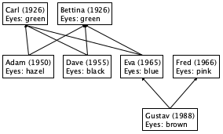
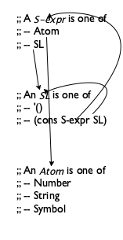
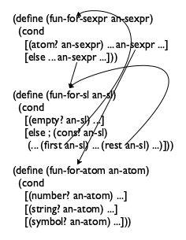
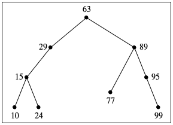
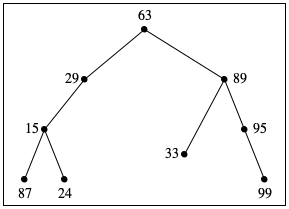
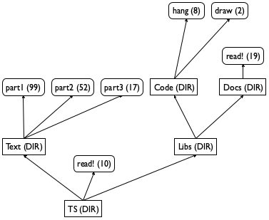
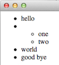
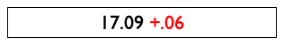
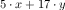
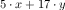

IV Взаимосвязанные(Переплетенные) данные
Вы можете подумать, что определения данных для списков и натуральных чисел довольно необычны. Эти определения данных ссылающихся сами на себя, и, по всей вероятности, они являются первыми такими определениями, с которыми вы когда-либо сталкивались. Как оказалось, многие классы данных требуют еще более сложных определений данных, чем эти два. Общие обобщения включают в себя множество ссылающихся на себя в одном определении данных или группу(пучёк) определений данных, которые ссылаются друг на друга. Эти формы данных стали повсеместными, и поэтому для программиста критически важно научиться справляться с любым набором определений данных. И в этом весь рецепт разработки.
Эта часть начинается с обобщения рецепта проектирования, чтобы он работал для всех форм определений структурных данных. Затем она вводит концепцию итеративного уточнения из раздела Проекты: списки на строгой основе, потому что сложные определения данных разрабатываются не одним махом, а в несколько этапов. Действительно, использование итеративного уточнения - одна из причин, почему все программисты - маленькие ученые, и почему наша дисциплина использует слово «наука» в своем американском названии. Две последние главы иллюстрируют эти идеи: в одной объясняется, как разработать интерпретатор для BSL, а в другой - об обработке XML, языка обмена данными для Интернета. Последняя глава расширяет рецепт проектирования еще раз, переработав его для функций, которые одновременно обрабатывают два сложных аргумента.
19 Поэзия S-выражений
Программирование похоже на поэзию. Подобно поэтам, программисты отрабатывают свои навыки на, казалось бы, бессмысленных идеях. Они все время пересматривают и редактируют, как объясняется в предыдущей главе. В этой главе вводятся все более сложные формы данных - по-видимому, без реальной цели. Даже когда мы предоставляем мотивационный фон, выбранные типы данных являются до крайности чистыми, и маловероятно, что вы когда-либо столкнетесь с ними снова.
Тем не менее, эта глава демонстрирует всю мощь рецепта проектирования и знакомит вас с типами данных, с которыми справляются реальные программы. Чтобы связать этот материал с тем, что вы встретите в своей жизни программиста, мы помечаем каждый раздел соответствующими именами: деревья, леса, XML. Последнее немного вводит в заблуждение, потому что на самом деле оно касается S-выражений; связь между S-выражениями и XML разъясняется в разделе Проект: Коммерция на XML, который, в отличие от этой главы, намного ближе к реальному использованию сложных форм данных.
19.1 Деревья
У всех нас есть родословная. Один из способов нарисовать генеалогическое древо - добавлять элемент каждый раз, когда рождается ребенок, и соединять элементы отца и матери. Тем людям, чьи родители неизвестны, не надо рисовать никакого отношения. В результате получается ancestor family tree(генеалогическое древо предков), потому что для любого человека дерево указывает на всех известных предков человека.

Рисунок 111: Семейное дерево
На рисунке 111 показано трехуровневое генеалогическое древо. Густав - ребенок Евы и Фреда, а Ева - ребенок Карла и Беттины. Помимо имен людей и семейных отношений, на дереве также записаны годы рождения и цвет глаз. Основываясь на этом эскизе, вы можете легко представить семейное древо, насчитывающее многие поколения и записывающее другие виды информации.
(define-struct child [father mother name date eyes])
(define Adam (make-child Carl Bettina "Adam" 1950 "hazel"))
(define-struct no-parent [])
(make-child (make-no-parent) (make-no-parent) "Bettina" 1926 "green")
(define-struct no-parent []) (define-struct child [father mother name date eyes]) ; An FT (short for family tree) is one of: ; – (make-no-parent) ; – (make-child FT FT String N String)
(make-child NP NP "Carl" 1926 "green")
(make-child (make-child NP NP "Carl" 1926 "green") (make-child NP NP "Bettina" 1926 "green") "Adam" 1950 "hazel")
; Oldest Generation: (define Carl (make-child NP NP "Carl" 1926 "green")) (define Bettina (make-child NP NP "Bettina" 1926 "green")) ; Middle Generation: (define Adam (make-child Carl Bettina "Adam" 1950 "hazel")) (define Dave (make-child Carl Bettina "Dave" 1955 "black")) (define Eva (make-child Carl Bettina "Eva" 1965 "blue")) (define Fred (make-child NP NP "Fred" 1966 "pink")) ; Youngest Generation: (define Gustav (make-child Fred Eva "Gustav" 1988 "brown")) Рисунок 112: Представление данных образца генеалогического древа
; FT -> ??? (define (fun-FT an-ftree) (cond [(no-parent? an-ftree) ...] [else (... (child-father an-ftree) ... ... (child-mother an-ftree) ... ... (child-name an-ftree) ... ... (child-date an-ftree) ... ... (child-eyes an-ftree) ...)]))
; FT -> ??? (define (fun-FT an-ftree) (cond [(no-parent? an-ftree) ...] [else (... (fun-FT (child-father an-ftree)) ... ... (fun-FT (child-mother an-ftree)) ... ... (child-name an-ftree) ... ... (child-date an-ftree) ... ... (child-eyes an-ftree) ...)]))
; FT -> Boolean ; does an-ftree contain a child ; structure with "blue" in the eyes field (define (blue-eyed-child? an-ftree) (cond [(no-parent? an-ftree) ...] [else (... (blue-eyed-child? (child-father an-ftree)) ... ... (blue-eyed-child? (child-mother an-ftree)) ... ... (child-name an-ftree) ... ... (child-date an-ftree) ... ... (child-eyes an-ftree) ...)]))
(check-expect (blue-eyed-child? Carl) #false)
(check-expect (blue-eyed-child? Gustav) #true)
Теперь мы готовы определить фактическую функцию. Функция различает два случая: no-parent(нет родителя) и child. В первом случае ответ должен быть очевиден, хотя мы не приводили никаких примеров. Поскольку данное генеалогическое древо вообще не содержит child, оно не может содержать детей с "blue"(голубым) цветом глаз. Следовательно, результат в первом предложении cond будет #false.
-
в соответствии с предназначением функции,
(blue-eyed-child? (child-father an-ftree))
-
аналогичным образом (blue-eyed-child? (child-mother an-ftree)) определяет, есть ли у кого-то в FT матери голубые глаза; а также
-
выражения селектора (child-name an-ftree), (child-date an-ftree) и (child-eyes an-ftree) извлекают имя, дату рождения и цвет глаз из заданной child(дочерней) структуры соответственно.
Ясно, что если child(дочерняя) структура содержит "blue"(синий) в поле eyes, функция ответит #true. Далее, выражения, касающиеся имен и дат рождения, бесполезны, остаются рекурсивные вызовы. Как уже говорилось, (blue-eyed-child? (child-father an-ftree)) пересекает(проходит) дерево со стороны отца, в то время как со стороны матери семейное дерево обрабатывается с помощью (blue-eyed-child? (child-mother an-ftree)). Если любое из этих выражений возвращает #true, an-ftree содержит child(ребенка) с "blue"(голубыми) глазами.
-
(string=? (child-eyes an-ftree) "blue")
-
(blue-eyed-child? (child-father an-ftree))
-
(blue-eyed-child? (child-mother an-ftree))
(or (string=? (child-eyes an-ftree) "blue") (blue-eyed-child? (child-father an-ftree)) (blue-eyed-child? (child-mother an-ftree)))
; FT -> Boolean ; does an-ftree contain a child ; structure with "blue" in the eyes field (check-expect (blue-eyed-child? Carl) #false) (check-expect (blue-eyed-child? Gustav) #true) (define (blue-eyed-child? an-ftree) (cond [(no-parent? an-ftree) #false] [else (or (string=? (child-eyes an-ftree) "blue") (blue-eyed-child? (child-father an-ftree)) (blue-eyed-child? (child-mother an-ftree)))])) Рисунок 113: Поиск голубоглазого ребенка в дереве предков
(blue-eyed-child? Carl) == (blue-eyed-child? (make-child NP NP "Carl" 1926 "green"))
== (cond [(no-parent? (make-child NP NP "Carl" 1926 "green")) #false] [else (or (string=? (child-eyes carl) "blue") (blue-eyed-child? (child-father carl)) (blue-eyed-child? (child-mother carl)))])
== (or (string=? "green" "blue") (blue-eyed-child? (child-father carl)) (blue-eyed-child? (child-mother carl))) == (or #false #false #false) == #false
; (1) (child-eyes (make-child NP NP "Carl" 1926 "green")) == "green" ; (2) (blue-eyed-child? (child-father (make-child NP NP "Carl" 1926 "green"))) == (blue-eyed-child? NP) == #false ; (3) (blue-eyed-child? (child-mother (make-child NP NP "Carl" 1926 "green"))) == (blue-eyed-child? NP) == #false
Упражнение 310. Разработайте count-persons. Функция использует генеалогическое древо и подсчитывает child(дочерние) структуры в дереве.
Упражнение 311. Разработайте функцию average-age. Она потребляет генеалогическое древо и текущий год. Она дает средний возраст всех child структур в генеалогическом древе.
Упражнение 312. Разработайте функцию eye-colors, которая потребляет генеалогическое древо и создает список всех цветов глаз в дереве. Цвет глаз может встречаться в итоговом списке более одного раза. Совет. Используйте append для объединения списков, полученных в результате рекурсивных вызовов.
Упражнение 313. Предположим, нам нужна функция blue-eyed-ancestor? ?, которая похожа на blue-eyed-child? но отвечает #true только тогда, когда у настоящего предка, а не у данного child(ребенка), были голубые глаза.
(check-expect (blue-eyed-child? Eva) #true)
(check-expect (blue-eyed-ancestor? Eva) #false)
(check-expect (blue-eyed-ancestor? Gustav) #true)
(define (blue-eyed-ancestor? an-ftree) (cond [(no-parent? an-ftree) #false] [else (or (blue-eyed-ancestor? (child-father an-ftree)) (blue-eyed-ancestor? (child-mother an-ftree)))]))
19.2 Леса(Forests)
; An FF (short for family forest) is one of: ; – '() ; – (cons FT FF) ; interpretation a family forest represents several ; families (say, a town) and their ancestor trees
Пример Задачи Создайте функцию blue-eyed-child-in-forest?, которая определяет, есть ли в семейном лесу child(ребенок) с "blue"(голубое) в поле eyes(глаза).
; FF -> Boolean ; does the forest contain any child with "blue" eyes (check-expect (blue-eyed-child-in-forest? ff1) #false) (check-expect (blue-eyed-child-in-forest? ff2) #true) (check-expect (blue-eyed-child-in-forest? ff3) #true) (define (blue-eyed-child-in-forest? a-forest) (cond [(empty? a-forest) #false] [else (or (blue-eyed-child? (first a-forest)) (blue-eyed-child-in-forest? (rest a-forest)))])) Рисунок 115: Как найти голубоглазого ребенка в семейном лесу
Простое решение показано на рисунке 115. Изучите сигнатуру, предназначение и примеры самостоятельно. Мы ориентируемся на программную организацию. Что касается шаблона, проектирование может использовать шаблон списка, потому что функция использует список. Если бы каждый элемент в списке был структурой с полем eyes и ничем другим, функция перебирала бы эти структуры, используя функцию селектора для поля eyes и сравнение строк. В данном случае каждый элемент является генеалогическим деревом, но, к счастью, мы уже знаем, как обрабатывать родословные деревья.
Давайте сделаем шаг назад и посмотрим, как мы объяснили рисунок 115. Отправной точкой является pair(пара) определений данных, где второе ссылается на первое, а оба ссылаются на себя. В результате получается пара функций, в которой вторая ссылается к первой, а обе ссылаются к себе. Другими словами, определения функций относятся друг к другу так же, как определения данных относятся друг к другу. В первых главах такого рода отношения замалчиваются, но сейчас ситуация достаточно сложная и заслуживает внимания.
Упражнение 314. Переформулируйте определение данных для FF с помощью абстракции List-of. А теперь сделать то же самое для функции blue-eyed-child-in-forest?. Наконец, дайте определение blue-eyed-child-in-forest? используя одну из абстракций списка из предыдущей главы.
Упражнение 315. Разработайте функцию average-age. Потребляет семейный лес и год(N). На основе этих данных получается средний возраст всех child(дочерних) экземпляров в лесу. Примечание Если деревья в этом лесу перекрывают друг друга, результат не является истинным средним значением, потому что одни люди вносят больший вклад, чем другие. В этом упражнении действуйте так, как будто деревья не пересекаются.
19.3 S-выражения
; An S-expr is one of: ; – Atom ; – SL ; An SL is one of: ; – '() ; – (cons S-expr SL)
; An Atom is one of: ; – Number ; – String ; – Symbol
Идея S-выражений принадлежит Джону Маккарти и его Лисперам, которые создали S-выражения в 1958 году, чтобы они могли обрабатывать программы на Лиспе с помощью других программам на Лиспе. Это, казалось бы, замкнутое рассуждение может показаться эзотерическим, но, как упоминалось в Intermezzo 2: Quote, Unquote, S-expression - это универсальная форма данных, которая часто открывается заново, в последнее время с приложениями во всемирной паутине. Таким образом, работа с S-выражениями подготавливает обсуждение того, как разрабатывать функции для сильно взаимосвязанных определений данных.
Упражнение 316. Определить функцию atom?.
Пример задачи Создайте функцию count, которая определяет, сколько раз какой-либо символ встречается в каком-либо S-выражении.
'hello 20.12 "world"
'() (cons 'hello (cons 20.12 (cons "world" '()))) (cons (cons 'hello (cons 20.12 (cons "world" '()))) '())
> '() '()
> '(hello 20.12 "world") (list 'hello #i20.12 "world")
> '((hello 20.12 "world")) (list (list 'hello #i20.12 "world"))
> '(define (f x) (+ x 55)) (list 'define (list 'f 'x) (list '+ 'x 55))
> '((6 f) (5 e) (4 d)) (list (list 6 'f) (list 5 'e) (list 4 'd))
> '(wing (wing body wing) wing) (list 'wing (list 'wing 'body 'wing) 'wing)
(check-expect (count 'world 'hello) 0) (check-expect (count '(world hello) 'hello) 1) (check-expect (count '(((world) hello) hello) 'hello) 2)
Совет Для взаимосвязанных определений данных создайте по одному шаблону для каждого определения данных. Создавайте их параллельно. Убедитесь, что они ссылаются друг на друга так же, как и определения данных. Конец
(define (count sexp sy) (cond [(atom? sexp) ...] [else ...])) (define (count-sl sl sy) (cond [(empty? sl) ...] [else ...]))
(define (count-atom at sy) (cond [(number? at) ...] [(string? at) ...] [(symbol? at) ...]))
(define (count sexp sy) (cond [(atom? sexp) ...] [else ...])) (define (count-sl sl sy) (cond [(empty? sl) ...] [else (... (first sl) ... ... (rest sl))]))
(define (count-atom at sy) (cond [(number? at) ...] [(string? at) ...] [(symbol? at) ...]))
-
atom? строка в count соответствует первой строке в определении S-expr. Чтобы указать перекрестную ссылку отсюда на Atom, мы добавляем (count-atom sexp sy), что означает, что мы интерпретируем sexp как Atom и позволяем соответствующей функции обрабатывать его.
-
Следуя той же мысли, вторая строка cond в count требует добавления (count-sl sexp sy).
-
empty? строка в count-sl соответствует строке в определении данных, которая не ссылается на другое определение данных.
-
Напротив, строка else содержит два выражения селектора, каждое из которых извлекает значения разного типа. В частности, (first sl) является элементом S-expr, что означает, что мы заключаем его в (count ...). В конце концов, count отвечает за подсчет внутри произвольных S-expr. Затем (rest sl) соответствует ссылке на себя, и мы знаем, что нам нужно иметь дело с ними с помощью рекурсивных вызовов функций.
-
Наконец, все три случая в Atom относятся к атомарным формам данных. Следовательно, функцию count-atom изменять не нужно.
(define (count sexp sy) (cond [(atom? sexp) (count-atom sexp sy)] [else (count-sl sexp sy)])) (define (count-sl sl sy) (cond [(empty? sl) ...] [else (... (count (first sl) sy) ... (count-sl (rest sl) sy) ...)]))
(define (count-atom at sy) (cond [(number? at) ...] [(string? at) ...] [(symbol? at) ...])) Рисунок 116: Шаблон для S-выражений
; S-expr Symbol -> N ; counts all occurrences of sy in sexp (define (count sexp sy) (cond [(atom? sexp) (count-atom sexp sy)] [else (count-sl sexp sy)])) ; SL Symbol -> N ; counts all occurrences of sy in sl (define (count-sl sl sy) (cond [(empty? sl) 0] [else (+ (count (first sl) sy) (count-sl (rest sl) sy))])) ; Atom Symbol -> N ; counts all occurrences of sy in at (define (count-atom at sy) (cond [(number? at) 0] [(string? at) 0] [(symbol? at) (if (symbol=? at sy) 1 0)])) Рисунок 117: Программа для S-выражений
На рисунке 116 представлены три полных шаблона. Как показано на рис. 117, заполнить пробелы в этих шаблонах несложно. Вы должны уметь объяснить любую случайную строчку в трех определениях. Например:
[(atom? sexp) (count-atom sexp sy)]
определяет, является ли sexp атомом(Atom), и, если да, интерпретирует S-выражение(S-expr) как атом(Atom) через count-atom.
[else (+ (count (first sl) sy) (count-sl (rest sl) sy))]
означает, что данный список состоит из двух частей: S-expr и SL. Используя count и count-sl, соответствующие функции используются для подсчета того, как часто sy появляется в каждой части, и два числа складываются, давая общее количество sy во всем sexp.
говорит нам, что если Atom является символом(Symbol), sy встречается один раз, если он равен sexp, а в противном случае не встречается вообще. Поскольку две части данных являются атомарными, другой возможности нет.
Упражнение 317. Программа, состоящая из трех связанных функций, должна выражать эту взаимосвязь с помощью выражения local.
Скопируйте и реорганизуйте программу с рисунка 117 в единую функцию, используя local. Проверьте исправленный код с помощью набора тестов для count.
Второй аргумент локальных функций sy никогда не изменяется. Он всегда совпадает с исходным символом. Следовательно, вы можете исключить его из определений локальных функций, чтобы сообщить читателю, что sy является константой во всем процессе обхода.
Упражнение 318. Разработайте depth. Функция использует S-выражение и определяет его глубину. Atom имеет глубину 1. Глубина списка S-выражений равна максимальной глубине его элементов плюс 1.
Упражнение 319. Разработайте substitute. Он использует S-выражение s и два символа, old и new. Результат похож на s, где все вхождения old заменены new.
Упражнение 320. Практикуйте шаг от определения данных к разработке функции с двумя изменениями в определении S-expr.
Для первого шага переформулируйте определение данных для S-expr так, чтобы первое предложение первого определения данных было расширено до трех предложений Atom, а второе определение данных использовало абстракцию List-of. Измените функцию count для этого определения данных.
На втором этапе интегрируйте определение данных SL в определение данных для S-expr. Еще раз упростите count. Подсказка Используйте lambda.
Упражнение 321. Абстрагируйте определения данных для S-expr и SL, чтобы они абстрагировались от типов атомов (Atom), которые могут появиться.
19.4 Проектирование с использованием взаимосвязанных данных
-
Потребность во “nests”(вложенных) взаимосвязанных определений данных аналогична потребности в определениях данных ссылающихся сами на себя. Постановка проблемы касается многих различных видов информации, и одна форма информации относится к другим видам.
Прежде чем действовать в таких ситуациях, нарисуйте стрелки, чтобы связать ссылки с определениями. Рассмотрим левую часть рисунка 118. Он отображает определение для S-expr, которое содержит ссылки на SL и Atom, которые связаны с их соответствующими определениями с помощью стрелок. Точно так же определение SL содержит одну ссылку на себя и одну обратную ссылку на S-expr; опять же, оба соединены соответствующими стрелками.
Как и определения данных ссылающихся на себя, эти вложеные определения также требуют проверки. Как минимум, вы должны быть в состоянии построить несколько примеров для каждого отдельного определения. Начните с предложений, которые не ссылаются ни на одно из других определений данных во вложении. Имейте в виду, что определение может быть неверным, если из них невозможно сгенерировать примеры.
-
Ключевое изменение заключается в том, что вы должны проектировать столько функций, сколько существует определений данных. Каждая функция специализируется на одном из определений данных; все остальные аргументы остаются прежними. Исходя из этого, вы начинаете с подписи, предназначении и фиктивного определения для каждой функции..
-
Обязательно проработайте функциональные примеры, в которых используются все взаимные ссылки во вложенных определениях данных.
-
Для каждой функции создайте шаблон в соответствии с определением его первичных данных. Используйте рисунок 52, чтобы провести создание шаблона до последнего шага. В обновленном последнем шаге требуется проверка всех ссылок на себя и перекрестных ссылок. Используйте определения данных, помеченные стрелками, чтобы направлять этот шаг. Для каждой стрелки в определениях данных добавьте стрелку в шаблоны. См. Правую часть рисунка 118 для версии шаблонов, помеченных стрелками.


Рисунок 118: Стрелки для вложенных определений данных и шаблонов
Теперь замените стрелки фактическими вызовами функций. По мере накопления опыта вы, естественно, пропустите этап рисования стрелки и напрямую будете использовать вызовы функций.
Примечания Обратите внимание на то, что оба вложения - одно для определений данных и одно для шаблонов функций - содержат четыре стрелки, и обратите внимание, как пары стрелок соответствуют друг другу. Исследователи называют это соответствие симметрией. Это свидетельство того, что рецепт разработки обеспечивает естественный путь от проблем к решениям.
-
Для проектирования тела мы начинаем с тех строк cond, которые не содержат естественных рекурсий или вызовов других функций. Они называются base cases(базовыми случаями). Соответствующие ответы обычно легко сформулировать или уже даны в примерах. После этого вы имеете дело со случаями ссылок на себя и случаями межфункциональных вызовов. Пусть вам подскажут вопросы и ответы на рис. 53.
-
Запустите тесты, когда все определения будут завершены. Если вспомогательная функция не работает, вы можете получить два отчета об ошибках, один для основной функции, а другой - для ошибочного вспомогательного определения. Одно исправление должно устранить обе. Убедитесь, что выполнение тестов охватывает все части функции.
19.5 Проект: BSTs(Бинарное дерево поиска)
Программисты часто работают с древовидными представлениями данных для повышения производительности своих функций. Особенно хорошо известной формой дерева является binary search tree(двоичное дерево поиска), потому что это хороший способ быстро сохранить и извлечь информацию.
(define-struct no-info []) (define NONE (make-no-info)) (define-struct node [ssn name left right]) ; A BT (short for BinaryTree) is one of: ; – NONE ; – (make-node Number Symbol BT BT)
(make-node 15 'd NONE (make-node 24 'i NONE NONE))
(make-node 15 'd (make-node 87 'h NONE NONE) NONE)
На рис. 119 показано, как мы должны относиться к таким деревьям как на рисовано. Деревья нарисованы вверх ногами, корень находится вверху, а крона - внизу. Каждый кружок соответствует узлу, помеченному полем ssn соответствующей структуры node(узла). На рисунках опущено NONE.
tree A
tree B


Упражнение 322. Нарисуйте два вышеупомянутых дерева, как показано на рисунке 119. Затем разработайте contains-bt?, которая определяет, встречается ли данное число в некотором данном BT(бинарном дереве).
Упражнение 323. Разработайте search-bt. Упражнение 323. Функция потребляет число n и BT. Если дерево содержит структуру node, поле ssn которой равно n, функция выдает значение поля name в этом узле. В противном случае функция выдаст #false.
Подсказка Рассмотрите возможность использования contains-bt?, чтобы сначала проверить все дерево или boolean? для проверки результата естественной рекурсии на каждом этапе.
tree A
10
15
24
29
63
77
89
95
99
tree B
87
15
24
29
63
33
89
95
99
BST-инвариант
BST (сокращение от binary search tree(бинарное дерево поиска)) - это BT согласно следующим условиям:
Упражнение 324. Разработайте функцию inorder. Она использует двоичное дерево и создает последовательность всех чисел(номеров) ssn в дереве, отображаемых слева направо при просмотре рисунка дерева.
Поиск узла(node) с заданным ssn в BST может использовать инвариант BST. Чтобы узнать, содержит ли BT узел с определенным ssn, функции может потребоваться просмотреть каждый узел( node) дерева. Напротив, чтобы выяснить, содержит ли двоичное дерево поиска один и тот же ssn, функция может исключить одно из двух поддеревьев для каждого проверяемого узла.
(make-node 66 'a L R)
Упражнение 325. Спроектируйте search-bst. Функция потребляет число n и BST. Если дерево содержит узел (node), поле ssn которого равно n, функция выдает значение поля name в этом узле. В противном случае функция выдаст NONE. Организация функции должна использовать инвариант BST, чтобы функция выполняла как можно меньше сравнений.
См. Упражнение 189 для поиска в отсортированных списках. Сравните!
Строить двоичное дерево легко; построение двоичного дерева поиска сложно. Для любых двух BT, числа и имени мы просто применяем make-node к этим значениям в правильном порядке, и вуаля, мы получаем новое BT. Эта же процедура не работает для BST, потому что результат обычно не будет BST. Например, если одно BST содержит узлы с полями ssn 3 и 5 в правильном порядке, а другое содержит поля ssn 2 и 6, простое объединение двух деревьев с другим номером социального страхования(ssn) и именем не дает BST.
Остальные два упражнения объясняют, как построить BST из списка чисел и имен. В частности, первое упражнение вызывает функцию, которая вставляет заданные ssn0 и name0 в BST; то есть он создает BST, подобный тому, который ему дан, с добавлением еще одного узла, содержащего поддеревья ssn0, name0 и NONE. Затем во втором упражнении запрашивается функция, которая может работать с полным списком чисел и имен.
(make-node N S NONE NONE)
'((99 o) (77 l) (24 i) (10 h) (95 g) (15 d) (89 c) (29 b) (63 a))
19.6 Упрощение функций
В упражнении 317 показано, как использовать local для организации функции, которая имеет дело с взаимосвязанной формой данных. Эта организация также помогает упростить функции, если мы знаем, что определение данных является окончательным. Чтобы продемонстрировать этот момент, мы объясним, как упростить решение упражнения 319.
; S-expr Symbol Atom -> S-expr ; replaces all occurrences of old in sexp with new (check-expect (substitute '(((world) bye) bye) 'bye '42) '(((world) 42) 42)) (define (substitute sexp old new) (local (; S-expr -> S-expr (define (for-sexp sexp) (cond [(atom? sexp) (for-atom sexp)] [else (for-sl sexp)])) ; SL -> S-expr (define (for-sl sl) (cond [(empty? sl) '()] [else (cons (for-sexp (first sl)) (for-sl (rest sl)))])) ; Atom -> S-expr (define (for-atom at) (cond [(number? at) at] [(string? at) at] [(symbol? at) (if (equal? at old) new at)]))) (for-sexp sexp))) Рисунок 120: Программа, которую нужно упростить
На рис. 120 показано полное определение функции substitute. В определении используются local и три вспомогательные функции, как указано в определении данных. На рисунке представлен тестовый пример, чтобы вы могли повторно протестировать функцию после каждого изменения, предложенного ниже. Стоп! Разработайте дополнительные тестовые случаи; одного почти никогда не достаточно.
Упражнение 328. Скопируйте и вставьте рисунок 120 в DrRacket; включите свой набор тестов. Подтвердите набор тестов. Читая оставшуюся часть этого раздела, внесите изменения и повторно запустите наборы тестов, чтобы подтвердить обоснованность наших аргументов.
(define (substitute sexp old new) (local (; S-expr -> S-expr (define (for-sexp sexp) (cond [(atom? sexp) (for-atom sexp)] [else (for-sl sexp)])) ; SL -> S-expr (define (for-sl sl) (map for-sexp sl)) ; Atom -> S-expr (define (for-atom at) (cond [(number? at) at] [(string? at) at] [(symbol? at) (if (equal? at old) new at)]))) (for-sexp sexp))) Рисунок 121: Упрощение программы, шаг 1
Поскольку мы знаем, что SL описывает списки S-expr, мы можем использовать map для упрощения for-sl. См. Рисунок 121 для получения результата. В то время как исходная программа говорит, что for-sexp применяется к каждому элементу на sl, ее пересмотренное определение более лаконично выражает ту же идею с помощью map.
Для второго шага упрощения нам нужно напомнить вам, что equal? сравнивает два произвольных значения. С учетом этого третья функция из local становится однострочной. На рисунке 122 показано это второе упрощение.
(define (substitute sexp old new) (local (; S-expr -> S-expr (define (for-sexp sexp) (cond [(atom? sexp) (for-atom sexp)] [else (for-sl sexp)])) ; SL -> S-expr (define (for-sl sl) (map for-sexp sl)) ; Atom -> S-expr (define (for-atom at) (if (equal? at old) new at))) (for-sexp sexp))) (define (substitute.v3 sexp old new) (local (; S-expr -> S-expr (define (for-sexp sexp) (cond [(atom? sexp) (if (equal? sexp old) new sexp)] [else (map for-sexp sexp)]))) (for-sexp sexp))) Рисунок 122: Упрощение программы, шаги 2 и 3
На этом этапе два последних определения в local состоят из одной строки. Более того, ни одно определение не является рекурсивным. Следовательно, мы можем in-line(встроить) функции в for-sexp. Встраивание означает замену (for-atom sexp) на (if (equal? sexp old) new sexp), то есть мы заменяем Хотя sexp также является параметром, эта замена действительно приемлема, потому что она также заменяет фактическое значение. параметр at фактическим аргументом sexp. Точно так же для (for-sl sexp) мы вставляем (map for-sexp sexp); см. нижнюю половину рисунка 121. Все, что у нас осталось, это функция, определение которой вводит одну локальную(local) функцию, которая вызывается с тем же основным аргументом. Если бы мы систематически предоставляли два других аргумента, мы бы сразу увидели, что локально определенная функция может использоваться вместо внешней.
(define (substitute sexp old new) (cond [(atom? sexp) (if (equal? sexp old) new sexp)] [else (map (lambda (s) (substitute s old new)) sexp)]))
20 Итеративное уточнение
При разработке реальных программ вы можете столкнуться со сложными формами информации и проблемой их представления в виде данных. Лучшая стратегия для решения этой задачи - использовать итеративное уточнение, хорошо известный научный процесс. Задача ученого состоит в том, чтобы представить часть реального мира, используя какую-либо форму математики. Результат усилий называется моделью. Затем ученый тестирует модель разными способами, в частности, предсказывая результаты экспериментов. Если расхождения между прогнозами и измерениями слишком велики, модель уточняется с целью улучшения прогнозов. Этот итеративный процесс продолжается до тех пор, пока прогнозы не станут достаточно точными.
Рассмотрим физика, который хочет предсказать траекторию полета ракеты. Хотя представление «ракета как точка» является простым, оно также довольно неточно, например, не учитывает трение в воздухе. В ответ физик может добавить грубый контур ракеты и ввести необходимую математику для представления трения. Эта вторая модель является уточнением(refinement) первой модели. В общем, ученый повторяет - или, как говорят программисты, итерирует(iterates) - этот процесс до тех пор, пока модель не будет предсказывать траекторию полета ракеты с достаточной точностью.
Программист, получивший образование на факультете информатики, должен поступать так же, как этот физик. Ключ в том, чтобы найти точное представление данных о реальной информации и функциях, которые обрабатывают ее должным образом. Сложные ситуации требуют процесса уточнения, чтобы получить удовлетворяющее представление данных в сочетании с надлежащими функциями. Процесс начинается с основных частей информации и при необходимости добавляет другие. Иногда программист должен уточнить модель после развертывания программы, потому что пользователи запрашивают дополнительные функции.
До сих пор мы использовали для вас итеративное уточнение, когда дело касалось сложных форм данных. Эта глава иллюстрирует итеративное уточнение как принцип разработки программы на расширенном примере, представляющем и обрабатывающем (части) файловой системы компьютера. Мы начинаем с краткого обсуждения файловой системы, а затем последовательно разрабатываем три представления данных. Попутно мы предлагаем несколько упражнений по программированию, чтобы вы увидели, как рецепт разработки также помогает изменять существующие программы.
20.1 Анализ данных
Прежде чем выключить DrRacket, убедитесь, что вся ваша работа где-то надежно спрятана. В противном случае вам придется вводить все заново, Файл на самом деле представляет собой последовательность bytes(байтов), один за другим. Попробуйте определить класс файлов. когда вы запустите DrRacket в следующий раз. Итак, вы просите свой компьютер сохранять программы и данные в файлы(files). Файл - это грубо говоря строка(string).

Рисунок 123: Пример дерева директорий
В большинстве компьютерных систем файлы организованы в директории(каталоги) или папки. Грубо говоря, каталог содержит несколько файлов и еще несколько каталогов. Последние называются подкаталогами и могут содержать еще больше подкаталогов и файлов. Из-за иерархии мы говорим о деревьях каталогов(директорий).
Рисунок 123 содержит графический эскиз небольшого дерева каталогов, и рисунок объясняет, почему компьютерные ученые называют их деревьями. Вопреки общепринятым правилам информатики, на рисунке показано дерево, растущее вверх, с корневым каталогом с именем TS. Корневой каталог содержит один файл с именем read!, и два подкаталога с именами Text и Libs соответственно. Первый подкаталог, Text, содержит только три файла; последний, Libs, содержит только два подкаталога, каждый из которых содержит хотя бы один файл. Наконец, каждый прямоугольник имеет одну из двух аннотаций: каталог помечен DIR, а файл помечен числом, его размером.
Упражнение 329. Сколько раз читается имя read! в дереве каталогов TS? Можете ли вы описать путь от корневого каталога до экземпляров? Каков общий размер всех файлов в дереве? Каков общий размер каталога, если размер каждого узла каталога равен 1? Сколько уровней каталогов в нем?
20.2 Уточнение определений данных
В упражнении 329 перечислены некоторые вопросы, которые пользователи обычно задают о каталогах. Чтобы ответить на такие вопросы, операционная система компьютера предоставляет программы, которые могут на них ответить. Если вы хотите разработать такие программы, вам необходимо разработать представление данных для деревьев каталогов.
В этом разделе мы используем итеративное уточнение для разработки трех таких представлений данных. Для каждого этапа нам нужно решить, какие атрибуты включать, а какие игнорировать. Рассмотрим дерево каталогов на рисунке 123 и представим, как оно создано. Когда пользователь впервые создает каталог, он пуст. Со временем пользователь добавляет файлы и каталоги. Обычно пользователь обращается к файлам по именам, но в основном считает каталоги контейнерами.
; A Dir.v1 (short for directory) is one of: ; – '() ; – (cons File.v1 Dir.v1) ; – (cons Dir.v1 Dir.v1) ; A File.v1 is a String.
Упражнение 330. Преобразуйте дерево каталогов на рисунке 123 в представление данных в соответствии с моделью 1.
Упражнение 331. Разработайте функцию how-many, которая определяет сколько файлов содержит данный каталог Dir.v1. Не забывайте следовать рецепту разработки; В упражнении 330 представлены примеры данных.
(define-struct dir [name content])
; A Dir.v2 is a structure: ; (make-dir String LOFD) ; An LOFD (short for list of files and directories) is one of: ; – '() ; – (cons File.v2 LOFD) ; – (cons Dir.v2 LOFD) ; A File.v2 is a String.
Упражение 332. Преобразуйте дерево каталогов на рисунке 123 в представление данных в соответсвии с моделью 2.
Упражнение 333. Разработайте функцию how-many, которая определеяет сколько файлов содержит данный Dir.v2. В упражнении 332 преведены примеры данных. Сравните свой результат с результатом упражнения 331.
Упражнение 334. Покажите, как снабдить каталог еще двумя атрибутами: размером и readability(доступностью чтения). Первый измеряет, сколько места занимает сам каталог(в отличии от его содержимого); последний указывает, может ли кто-либо еще, кроме пользователя, просматривать содержимое каталога.
(define-struct file [name size content])
(define-struct dir.v3 [name dirs files])
; A Dir.v3 is a structure: ; (make-dir.v3 String Dir* File*) ; A Dir* is one of: ; – '() ; – (cons Dir.v3 Dir*) ; A File* is one of: ; – '() ; – (cons File.v3 File*)
Упражнение 335. Преобразуйте дерево каталогов на рисунке 123 в представление данных в соответствии с моделью 3. Используйте "" для содержимого файлов.
Упражнение 336. Разработайте функцию how-many, которая определяет, сколько файлов содержит данный Dir.v3. В упражнении 335 приведены примеры данных. Сравните свой результат с результатом упражнения 333.
Учитывая сложность определения данных, подумайте как каждый может разработать правильные функции. Почему вы уверены, что how-many выдает правильные результаты?
Упражнение 337. Используйте List-of для упрощения определения данных Dir.v3. Затем используйте функции обработки списков ISL+ из рисунков 95 и 96, чтобы упростить определение(я) функции для решения упражнения 336.
Начав с простого представления первой модели и шаг за шагом её уточняя, мы разработали достаточно точное представление данных для деревьев каталогов. Действительно, это третье представление данных отражает природу дерева каталогов гораздо точнее, чем первые два. На основе этой модели мы можем создать ряд других функций, которые пользователи ожидают от операционной системы компьютера.
20.3 Уточнение Функций
; String -> Dir.v3 ; creates a representation of the a-path directory (define (create-dir a-path) ...)
(define O (create-dir "/Users/...")) ; on OS X (define L (create-dir "/var/log/")) ; on Linux (define W (create-dir "C:\\Users\\...")) ; on Windows
Предупреждение (1) Для больших деревьев каталогов, DrRacket может потребоваться много времени для построения представления. Используйте create-dir для небольших деревьев каталогов. (2) Не определяйте свой собственный структурный тип dir. Пакет обучения уже определяет его, и вы не должны определять дважды этот структурный тип.
Хотя create-dir предоставляет только представление дерева каталогов, он достаточно реалистичен, чтобы дать вам представление о том, как разрабатывать программы на этом уровне. Следующие упражнения илюстрируют этот момент. Они используют Dir для обозначения общей идеи представления данных для деревьев каталогов. Используйте простейшее определение данных Dir, которое позволяет выполнить соответствующее упражнение. Не стесняйтесь использовать определение данных из упражнения 337 и функции из рисунков 95 и 96.
Упражнение 338. Используйте create-dir чтобы превратить некоторые из ваших каталогов в представление данных ISL+. Затем используйте how-many из упражнения 336, чтобы подсчитать, сколько файлов они содержат. Почему вы уверены, что how-many даст правильные результаты для этих каталогов?
Упражнение 339. Разработайте find?. Функция использует Dir и имя файла и определяет, встречается ли файл с этим именем в дереве каталогов.
Упражнение 340. Разработайте функцию ls, которая перечисляет имена всех файлов и всех каталогов в заданном Dir.
Упражнение 341. Разработайте du, - функцию, которая использует Dir и вычисляет общий размер всех файлов во всем дереве каталогов. Предположим, что хранение каталога в структуре Dir стоит 1 единицу хранения файлов. В реальном мире каталог - это, по сути, специальный файл, и его размер зависит от размера связанного с ним каталога.
Упражнение 342. Разработайте find. Функция использует каталог d и имя файла f. Если (find? d f) равно #true, find выдает путь к файлу с именем f; в противном случае будет получено #false.
Подсказка Хотя заманчиво сначала проверить, встречается ли имя файла в дереве каталогов, вы должны сделать это для каждого отдельного подкаталога. Значит лучше совместить функционал find? и find.
Вызов(трудная задача) Функция find обнаруживает только один из двух файлов с именем read! на рисунке 123. Разработайте find-all, которая обобщает find и создает список всех путей, ведущих к f в d. Что должно выдавать команда find-all, когда (find? d f) имеет значение #false? Действительно ли эта часть проблемы представляет собой вызов(трудную задачу) по сравнению с основной проблемой?
Упражнение 343. Разработайте функцию ls-R, которая перечисляет пути ко всем файлам, содержащимся в данном каталоге Dir.
Упражнение 344. Перепроектируйте функцию find-all из упражнения 342, используя ls-R из упражнения 343. Это разработка с помощью композиции, и если вы решили сложную часть упражнения 342, ваша новая функция также сможет находить каталоги.
21 Уточнение Интерпретаторов
DrRacket - это программа. Она сложна, связанна с множеством различных типов данных. Как и большинство сложных программ, DrRacket также состоит из множества функций: одна позволяет программистам редактировать текст, другая действует как область взаимодействия, третья проверяет, являются ли определения и выражения «grammatical/грамматическими», и так далее.
В этой главе мы покажем вам, как разработать функцию, которая реализует основу области взаимодействия. Естественно, в этом разрабатываемом проекте мы используем итеративное уточнение. По сути, сама идея сосредоточить внимание на этом аспекте DrRacket - это еще один пример уточнения/усовершенствования, а именно, очевидный вариант реализации только одной части функциональности.
Проще говоря, область взаимодействий выполняет задачу определения значений вводимых вами выражений. После того, как вы нажмете RUN, область взаимодействия знает обо всех определениях. Затем она готова принять выражение, которое может относиться к этим определениям, определить значение этого выражения и повторить этот цикл так часто, как вы хотите. По этой причине многие люди также называют область взаимодействия циклом (REPL)чтение-вычисление-печать, где eval - это сокращение от evaluator(вычислитель/оценщик), функции, которая также называется interpreter(интерпретатором).
Как и в этой книге, наш процесс уточнения начинается с числовых выражений BSL. Они простые; они не предполагают понимания определений; и даже твоя сестра в пятом классе может определить их значение. Как только вы поймете этот первый шаг, вы поймете разницу между выражением BSL и его представлением. Далее мы переходим к выражениям с переменными. Последний шаг - добавить определения.
21.1 Интерпретация выражений
Наша первая задача - согласовать представление данных для программ BSL. То есть мы должны выяснить, как представить выражение BSL как часть данных BSL. Сначала это звучит странно и непривычно, но это несложно. Предположим, мы просто хотим для начала представить числа, сложения и умножения. Ясно, что числа могут заменять числа. Однако выражение сложения требует составных данных, потому что оно содержит два выражения и потому, что оно отличается от выражения умножения, которое также требует представления данных.
(define-struct add [left right]) (define-struct mul [left right])
Выражение BSL
представление выражения BSL
3
3 (+ 1 1)
(make-add 1 1) (* 300001 100000)
(make-mul 300001 100000)
Выражение BSL
представление выражения BSL
(+ (* 1 1) 10)
(make-add (make-mul 1 1) 10)
(+ (* 3 3) (* 4 4))
(make-add (make-mul 3 3) (make-mul 4 4))
(+ (* (+ 1 2) 3) (* (* (+ 1 1) 2) 4))
(make-add (make-mul (make-add 1 2) 3) (make-mul (make-mul (make-add 1 1) 2) 4))
Упражнение 345. Сформулируйте определение данных для представления выражений BSL на основе определений структурных типов add и mul. Давайте использовать BSL-expr по аналогии с S-expr для нового класса данных.
-
(make-add -1 2)
-
(make-add (make-mul -2 -3) 33) Здесь “interpret”(интерпретировать) означает “(translate)преобразовывать данные в информацию”. Напротив, “interpreter”(интерпретатор) в названии этой главы относится к программе, которая использует представление программы и выдает ее значение. Хотя эти две идеи связаны, они не совпадают.
Теперь, когда у вас есть представление данных для программ BSL, пора разработать evaluator(вычислитель/оценщик). Эта функция использует представление выражения BSL и выдает его значение. Опять же, эта функция не похожа на все, что вы когда-либо создавали, поэтому стоит поэкспериментировать с некоторыми примерами. С этой целью вы можете либо использовать правила арифметики для определения значения выражения, либо «поиграть» в области взаимодействий DrRacket. Взгляните на следующую таблицу для наших примеров:
Выражение BSL
его представление
его значение
3
3
3 (+ 1 1)
(make-add 1 1)
2 (* 3 10)
(make-mul 3 10)
30 (+ (* 1 1) 10)
(make-add (make-mul 1 1) 10)
11
Упражнение 346. Сформулируйте определение данных для класса значений, которые может вычислять представление выражения BSL.
Упражнение 347. Разработайте eval-expression. Функция использует представление выражения BSL и вычисляет его значение.
Упражнение 348. Разработайте представление данных для Boolean(логических) выражений BSL, построенных из #true, #false, and, or и not. Затем создайте eval-bool-expression, который использует (представления) Boolean(логических) выражений BSL и вычисляет их значения. Какие значения выдают эти Boolean(логические) выражения?
> (+ 1 1) 2
> '(+ 1 1) (list '+ 1 1)
> (+ (* 3 3) (* 4 4)) 25
> '(+ (* 3 3) (* 4 4)) (list '+ (list '* 3 3) (list '* 4 4))
Интерпретация представления S-выражения неуклюжа, в основном потому, что не все S-выражения представляют BSL-expr(BSL-выражения). Например, #true, "hello" и '(+ x 1) не являются представителями выражений BSL. В результате S-выражения довольно неудобны для разработчиков интерпретаторов.
Программисты изобрели parser(парсеры/ анализаторы выражений), чтобы преодолеть разрыв между удобством использования и реализацией. Синтаксический анализатор одновременно проверяет, соответствует ли часть данных определению данных, и, если это так, создает соответствующий элемент из выбранного класса данных. Последнее называется parse tree(деревом синтаксического анализа). Если данные не соответствуют, синтаксический анализатор сигнализирует об ошибке, как и проверяющие функции из Input Errors.
На рисунке 125 представлен синтаксический анализатор BSL для S-выражений. В частности, parse(синтаксический анализ) использует S-expr и выдает/производит BSL-expr - тогда и только тогда, когда данное S-выражение является результатом цитирования выражения BSL, которое имеет представителя BSL-expr.
Упражнение 349. Создавайте тесты для parse, пока DrRacket не сообщит вам, что каждый элемент в области определений покрывается во время выполнения теста.
Упражнение 350. Что необычного в определении этой программы по отношению к рецепту разработки?
Примечание Один необычный аспект заключается в том, что parse использует length(длину) аргумента списка. Настоящие парсеры избегают length, потому что это замедляет работу функций.
Упражнение 351. Разработайте interpreter-expr. Функция принимает S-выражения. Если parse распознает их как BSL-expr, она выдает их значение. В противном случае она сигнализирует о той же ошибке, что и parse.
; S-expr -> BSL-expr (define (parse s) (cond [(atom? s) (parse-atom s)] [else (parse-sl s)])) ; SL -> BSL-expr (define (parse-sl s) (local ((define L (length s))) (cond [(< L 3) (error WRONG)] [(and (= L 3) (symbol? (first s))) (cond [(symbol=? (first s) '+) (make-add (parse (second s)) (parse (third s)))] [(symbol=? (first s) '*) (make-mul (parse (second s)) (parse (third s)))] [else (error WRONG)])] [else (error WRONG)]))) ; Atom -> BSL-expr (define (parse-atom s) (cond [(number? s) s] [(string? s) (error WRONG)] [(symbol? s) (error WRONG)])) Рисунок 125: От S-expr к BSL-expr
21.2 Интерпретация переменных
(define x 5)
> 'x 'x
> '(* 1/2 (* x 3)) (list '* 0.5 (list '* 'x 3))
; A BSL-var-expr is one of: ; – Number ; – Symbol ; – (make-add BSL-var-expr BSL-var-expr) ; – (make-mul BSL-var-expr BSL-var-expr)
Выражение BSL
представление выражения BSL
x
'x (+ x 3)
(make-add 'x 3) (* 1/2 (* x 3))
(make-mul 1/2 (make-mul 'x 3))
(+ (* x x) (* y y))
(make-add (make-mul 'x 'x) (make-mul 'y 'y))
Один из способов определить значение выражений переменных - заменить все переменные значениями, которые они представляют. Это способ, который вы знаете из школьных уроков математики, и это прекрасный способ.
Упражнение 352. Разработайте subst. Функция использует BSL-var-expr ex, Symbol x и Number v. Она производит BSL-var-expr, подобное ex, со всеми вхождениями x, замененными на v.
Упражнение 353. Создайте функцию numeric?. Она определяет, является ли BSL-var-expr также BSL-expr. Здесь мы предполагаем, что ваше решение упражнения 345 - это определение BSL-var-expr без Symbols.
Упражнение 354. Разработайте eval-variable. Проверяющая функция потребляет BSL-var-expr и определяет его значение, если numeric? дает true для ввода. В противном случае сигнализирует об ошибке.
; An AL (short for association list) is [List-of Association]. ; An Association is a list of two items: ; (cons Symbol (cons Number '())).
Разработайте eval-variable*. Функция использует BSL-var-expr ex и ассоциативный список da. Начиная с ex, она итеративно применяет subst ко всем ассоциациям из da. Если numeric? истинен для результата, определяет его значение; в противном случае она сигнализирует о той же ошибке, как и eval-variable. Подсказка Думайте о заданном BSL-var-expr как об атомарном значении и вместо этого просмотрите данный список ассоциаций. Мы даем эту подсказку, потому что для создания этой функции требуются небольшие знания разработки из Одновременная Обработка..
Модель среды Упражнение 354 основано на математическом понимании определений констант. Если имя определено для обозначения некоторого значения, все вхождения имени могут быть заменены значением. Подстановка выполняет эту замену раз и навсегда до того, как начнется процесс вычисления.
Альтернативный подход, получивший название модели среды(environment model), заключается в поиске значения переменной при необходимости. Вычислитель немедленно начинает обработку выражения, но также продолжает представление области определений. Каждый раз, когда вычислитель встречает переменную, он ищет ее значение в области определений и использует её.
21.3 Интерпретация Функций
На этом этапе вы понимаете, как вычислять программы BSL, состоящие из определений констант и выражений переменных. Естественно, вы хотите добавить определения функций, чтобы знать - по крайней мере в принципе - как работать со всем BSL.
Цель этого раздела - усовершенствовать вычислитель из Интерпретации Переменных, чтобы он мог справляться с функциями. Поскольку определения функций отображаются в области определений, другой способ описать усовершенствованный вычислитель - сказать, что он имитирует DrRacket, когда область определений содержит несколько определений функций, а программист вводит выражение в области взаимодействий, которое содержит использование этих функций.
Для простоты предположим, что все функции в области определений используют один аргумент и что существует только одно такое определение. Необходимые знания предметной области восходят к школе, где вы узнали, что f(x) = e представляет собой определение функции f, что f(a)) представляет применение f к a, и что для вычисления последнего вы подставляете a вместо x в e. Оказывается, вычисление функциональных приложений на таком языке, как BSL, в основном работает так же.
Перед тем как приступить к выполнению следующих упражнений, вы можете освежить свои знания терминологии, касающейся функций, представленной в интермеццо 1. В большинстве случаев на курсах алгебры этот аспект математики игнорируется, но когда вам понадобится точное использование и понимание терминологии. желаю вам решить эти проблемы.
Упражнение 356. Расширьте представление данных из интерпретации переменных, включив в него применение функции, определяемой программистом. Напомним, что применение-функция состоит из двух частей: имени и выражения. Первая - это имя применяемой функции; последняя аргумент.
Представьте эти выражения: (k (+ 1 1)), (* 5 (k (+ 1 1))), (* (i 5) (k (+ 1 1))). Мы называем этот недавно определенный класс данных BSL-fun-expr.
-
BSL-fun-expr ex;
-
символ f, который представляет имя функции;;
-
символ x, который представляет параметр функции; а также
-
BSL-fun-expr b, представляющий тело функции.
-
вычисляет аргумент,
-
подставляет значение аргумента в x , заменяя его на b; а также
-
наконец, вычисляет результирующее выражение с помощью eval-definition1.
(local ((define value (eval-definition1 arg f x b)) (define plugd (subst b x value))) (eval-definition1 plugd f x b))
Если eval-definition1 встречает переменную, она сигнализирует о той же ошибке, что и eval-variable из упражнения 354. Она также сигнализирует об ошибке для применения функций, которые ссылаются на имя функции, отличное от f.
Предупреждение Использование этой открытой формы рекурсии вводит новый элемент в ваши вычисления: незавершение(non-termination). То есть программа может работать вечно, вместо того, чтобы выдавать результат или сигнализировать об ошибке. Если вы следовали рецептам разработки первых четырех частей, вы не сможете записать такие программы. Ради интереса создайте вход для eval-definition1, который заставит его работать вечно. Используйте STOP, чтобы завершить программу.
Для вычислителя, который имитирует область взаимодействия, нам нужно представление области определений. Мы предполагаем, что это список определений.
-
имя функции, представленное символом;
-
параметр функции, который также является именем; а также
-
тело функции, которое является выражением переменной.
Затем определите класс BSL-fun-def* для представления области определений, состоящей из ряда определений функций с одним аргументом. Преобразуйте область определений, которая определяет f, g и h, в ваше представление данных и назовите его da-fgh.
; BSL-fun-def* Symbol -> BSL-fun-def ; retrieves the definition of f in da ; signals an error if there is none (check-expect (lookup-def da-fgh 'g) g) (define (lookup-def da f) ...)
Упражнение 359. Разработайте eval-function*. Функция использует ex, BSL-fun-expr, и da представление BSL-fun-def* области определений. Она дает результат, который DrRacket показывает, если вы вычисляете ex в области взаимодействий, предполагая, что область определений содержит da.
-
вычисляет аргумент;
-
ищет определение f в представлении da в BSL-fun-def, которое имеет параметр и тело;
-
заменяет значение аргумента на параметр функции в теле функции; а также
-
вычисляет новое выражение через рекурсию.
21.4 Интерпретация Всего
(define close-to-pi 3.14) (define (area-of-circle r) (* close-to-pi (* r r))) (define (volume-of-10-cylinder r) (* 10 (area-of-circle r)))
> (area-of-circle 1) #i3.14
> (volume-of-10-cylinder 1) #i31.400000000000002
> (* 3 close-to-pi) #i9.42
Упражнение 360. Сформулируйте определение данных для представления области определений DrRacket. Конкретно, представление данных должно работать для последовательности, которая свободно смешивает определения констант и определения функций с одним аргументом. Убедитесь, что вы можете представить область определений, состоящую из трех определений, в начале этого раздела. Мы называем этот класс данных BSL-da-all.
Разработайте функцию lookup-con-def. Она потребляет BSL-da-all da и символ x. Она выдает представление определения константы с именем x, если такая часть данных существует в da; в противном случае функция сигнализирует об ошибке, говоря, что такое определение константы не может быть найдено.
Создайте функцию lookup-fun-def. Она потребляет BSL-da-all da и символ f. Она выдает представление определения функции с именем f, если такая часть данных существует в da; в противном случае функция сигнализирует об ошибке, говоря, что такое определение функции не может быть найдено.
Упражнение 361. Разработайте eval-all. Подобно eval-function* из упражнения 359, эта функция использует представление выражения и области определений. Она выдает то же значение, что и DrRacket, если выражение вводится в приглашении в области взаимодействий, а область определений содержит соответствующие определения. Подсказка Ваша функция eval-all должна обрабатывать переменные в данном выражении, как eval-var-lookup в упражнении 355.
Упражнение 362. Громоздко вводить структурное представление данных выражений BSL и области определений. Как показывает конец Интерпретация выражений, гораздо проще заключать в кавычки выражения и (списки) определений.
Разработайте interpreter(интерпретатор) функций. Он использует S-expr и Sl. Первый должен представлять выражение, а второй - список определений. Функция выполняет синтаксический анализ с помощью соответствующих функций синтаксического анализа, а затем использует eval-all из упражнения 361 для вычисления выражения. Совет Вы должны адаптировать идеи упражнения 350, чтобы создать синтаксический анализатор определений и списков определений.
На данный момент вы многое знаете об интерпретации BSL. Вот некоторые из недостающих частей: Boolean(логические значения) с cond или if; Строки (String) и такие операции, как string-length или string-append; и списки с '(), empty?, cons, cons?, first, rest; и так далее. Как только ваш вычислитель сможет справиться со всем этим, это будет в основном завершено, потому что ваши вычислители уже знают, как интерпретировать рекурсивные функции. Теперь, когда мы говорим «доверьтесь нам, вы знаете, как создавать эти усовершенствования», мы имеем в виду это.
22 Проект: Торговля с помощью XML
XML - широко используемый язык данных. Одно из применений касается обмена сообщениями между программами, запущенными на разных компьютерах. Например, когда вы указываете свой веб-браузер на веб-сайте, вы подключаете программу на своем компьютере к программе на другом компьютере, и последний отправляет данные XML первому. Как только браузер получает данные XML, он отображает их как изображение на мониторе вашего компьютера.
Данные XML
отображается в браузере
<ul>
<li> hello </li>
<li> <ul>
<li> one </li>
<li> two </li>
</ul>
</li>
<li> world </li>
<li> good bye </li>
</ul>

В этой главе объясняются основы обработки XML как еще одно упражнение по проектированию, касающееся взаимосвязанных определений данных и итеративного уточнения. Следующий раздел начинается с неформального сравнения S-выражений и данных XML и использует его для формулирования полноценного определения данных. Если вы считаете, что XML слишком старомоден для 2021 года, не стесняйтесь повторить упражнение для JSON или другого современного формата обмена данными. Принципы разработки остались прежними. В остальных разделах на примерах объясняется, как обрабатывать S-выражениями данные XML.
22.1 XML как S-выражения
<machine> </machine>
<machine />
'(machine)
<machine><action /></machine>
<machine><action></action></machine>
<machine><action /><action /><action /></machine>
'(machine (action))
'(machine (action) (action) (action))
<machine initial="red"></machine>
<machine initial="red">
<action state="red" next="green" />
<action state="green" next="yellow" />
<action state="yellow" next="red" />
</machine>
'(machine ((initial "red")))
'(machine ((initial "red")) (action ((state "red") (next "green"))) (action ((state "green") (next "yellow"))) (action ((state "yellow") (next "red"))))
Вы можете вспомнить идею из Intermezzo 2: Quote, Unquote, в котором S-выражения используются для представления XHTML, особого диалекта XML. В частности, интермеццо показывает, насколько легко программист может записывать нетривиальные XML-данные и даже шаблоны XML-представлений, используя backquote(обратные кавычки) и unquote(отмены кавычек). Конечно, Интерпретация выражений указывает на то, что вам нужен синтаксический анализатор, чтобы определить, является ли какое-либо данное S-выражение представлением данных XML, а синтаксический анализатор является сложной и необычной функцией.
; An Xexpr.v2 is a list: ; – (cons Symbol Body) ; – (cons Symbol (cons [List-of Attribute] Body)) ; where Body is short for [List-of Xexpr.v2] ; An Attribute is a list of two items: ; (cons Symbol (cons String '()))
Упражнение 363. Все элементы Xexpr.v2 начинаются с символа(Symbol), но за некоторыми следует список атрибутов, а за некоторыми - просто список Xexpr.v2s. Переформулируйте определение Xexpr.v2, чтобы выделить общее начало и выделить различные типы окончаний.
Исключите использование List-of из Xexpr.v2.
-
<transition from="seen-e" to="seen-f" />
-
<ul><li><word /><word /></li><li><word /></li></ul>
-
'(server ((name "example.org")))
-
'(carcas (board (grass)) (player ((name "sam"))))
-
'(start)
-
xexpr-name, который извлекает тег представления элемента;
-
xexpr-attr, извлекающий список атрибутов; а также
-
xexpr-content, который извлекает список элементов содержимого.
(define a0 '((initial "X"))) (define e0 '(machine)) (define e1 `(machine ,a0)) (define e2 '(machine (action))) (define e3 '(machine () (action))) (define e4 `(machine ,a0 (action) (action)))
; Xexpr.v2 -> [List-of Attribute] ; retrieves the list of attributes of xe (define (xexpr-attr xe) '())
(check-expect (xexpr-attr e0) '()) (check-expect (xexpr-attr e1) '((initial "X"))) (check-expect (xexpr-attr e2) '()) (check-expect (xexpr-attr e3) '()) (check-expect (xexpr-attr e4) '((initial "X")))
(define (xexpr-attr xe) (local ((define optional-loa+content (rest xe))) (cond [(empty? optional-loa+content) ...] [else ...])))
(define (xexpr-attr xe) (local ((define optional-loa+content (rest xe))) (cond [(empty? optional-loa+content) ...] [else (... (first optional-loa+content) ... (rest optional-loa+content) ...)])))
; [List-of Attribute] or Xexpr.v2 -> ??? ; determines whether x is an element of [List-of Attribute] ; #false otherwise (define (list-of-attributes? x) #false)
(define (xexpr-attr xe) (local ((define optional-loa+content (rest xe))) (cond [(empty? optional-loa+content) '()] [else (local ((define loa-or-x (first optional-loa+content))) (if (list-of-attributes? loa-or-x) loa-or-x '()))]))) Рисунок 126: Полное определение xexpr-attr
; [List-of Attribute] or Xexpr.v2 -> Boolean ; is x a list of attributes (define (list-of-attributes? x) (cond [(empty? x) #true] [else (local ((define possible-attribute (first x))) (cons? possible-attribute))]))
Упражнение 366. Разработайте xexpr-name и xexpr-content.
Упражнение 367. Рецепт разработки требует наличия ссылки на себя в шаблоне для xexpr-attr. Добавьте эту ссылку на себя в шаблон, а затем объясните, почему завершенная функция синтаксического анализа не содержит ее.
Упражнение 368. Сформулируйте определение данных, которое заменяет неформальную сигнатуру “or”(или) для определения функции list-of-attributes?.
Упражнение 369. Разработайте find-attr. Функция использует список атрибутов и символ. Если список атрибутов связывает символ со строкой, функция извлекает эту строку; в противном случае возвращается #false. Найдите assq и используйте его для определения функции.
В оставшейся части этой главы Xexpr ссылается на Xexpr.v2. Кроме того, мы предполагаем, что определены xexpr-name, xexpr-attr и xexpr-content. Наконец, мы используем find-attr из упражнения 369 для получения значений атрибутов.
22.2 Визуализация XML-перечислений
XML - это фактически семейство языков. Люди определяют диалекты для определенных каналов общения. Например, XHTML - это язык для отправки веб-контента в формате XML. В этом разделе мы проиллюстрируем, как разработать функцию рендеринга для небольшого фрагмента XHTML, в частности перечислений(enumerations) из начала этой главы.
Тег ul окружает так называемый неупорядоченный список HTML. Каждый элемент этого списка помечен li, который обычно содержит слова, а также другие элементы, даже перечисления. «Неупорядоченный HTML» означает, что каждый элемент должен отображаться с начальным маркером вместо числа.
; An XWord is '(word ((text String))).
Упражнение 370. Составьте три примера для XWords. Разработайте word?, которая проверяет, находится ли какое-либо значение ISL+ в XWord, и word-text, которая извлекает значение единственного атрибута экземпляра XWord.
Упражнение 371. Уточните определение Xexpr, чтобы вы могли представлять элементы XML, включая элементы в перечислениях, в виде простых строк.
; An XEnum.v1 is one of: ; – (cons 'ul [List-of XItem.v1]) ; – (cons 'ul (cons Attributes [List-of XItem.v1])) ; An XItem.v1 is one of: ; – (cons 'li (cons XWord '())) ; – (cons 'li (cons Attributes (cons XWord '())))
Стоп! Утверждают, что каждый элемент XEnum.v1 также находится в XExpr.
(define e0 '(ul (li (word ((text "one")))) (li (word ((text "two"))))))
(define e0-rendered (above/align 'left (beside/align 'center BT (text "one" 12 'black)) (beside/align 'center BT (text "two" 12 'black))))
Теперь давайте тщательно спроектируем функцию. Поскольку для представления данных требуется два определения данных, рецепт проектирования говорит вам, что вы должны проектировать две функции параллельно. Однако повторный взгляд показывает, что в этом конкретном случае второе определение данных не связано с первым, что означает, что мы можем иметь дело с ним отдельно.
; XItem.v1 -> Image ; renders an item as a "word" prefixed by a bullet (define (render-item1 i) (... (xexpr-content i) ...))
(define (render-item1 i) (local ((define content (xexpr-content i)) (define element (first content)) (define a-word (word-text element))) (... a-word ...)))
(define (render-item1 i) (local ((define content (xexpr-content i)) (define element (first content)) (define a-word (word-text element)) (define item (text a-word 12 'black))) (beside/align 'center BT item)))
Упражнение 372. Прежде чем продолжить, снабдите определение render-item1 тестами. Обязательно сформулируйте эти тесты таким образом, чтобы они не зависели от константы BT. Затем объясните, как работает функция; имейте в виду, что в предназначении объясняется, что она делает.
; XEnum.v1 -> Image ; renders a simple enumeration as an image (check-expect (render-enum1 e0) e0-rendered) (define (render-enum1 xe) empty-image)
(define (render-enum1 xe) (local ((define content (xexpr-content xe)) ; XItem.v1 Image -> Image (define (deal-with-one item so-far) ...)) (foldr deal-with-one empty-image content)))
-
первым аргументом foldr должна быть функция с двумя аргументами;
-
вторым аргументом должно быть изображение; а также
-
последний аргумент - это список, представляющий содержимое XML.
(define (render-enum1 xe) (local ((define content (xexpr-content xe)) ; XItem.v1 Image -> Image (define (deal-with-one item so-far) (above/align 'left (render-item1 item) so-far))) (foldr deal-with-one empty-image content)))
; An XItem.v2 is one of: ; – (cons 'li (cons XWord '())) ; – (cons 'li (cons [List-of Attribute] (list XWord))) ; – (cons 'li (cons XEnum.v2 '())) ; – (cons 'li (cons [List-of Attribute] (list XEnum.v2))) ; ; An XEnum.v2 is one of: ; – (cons 'ul [List-of XItem.v2]) ; – (cons 'ul (cons [List-of Attribute] [List-of XItem.v2])) Рисунок 127: Реалистичное представление данных перечислений XML
Плоские перечисления распространены, но они также являются простым приближением к полноценному случаю. В реальном мире веб-браузеры должны справляться с произвольно вложенными перечислениями, которые поступают через Интернет. В XML и его диалекте веб-браузера XHTML вложение выполняется просто. Любой элемент может отображаться как содержимое любого другого элемента. Вам интересно, является ли произвольное вложение правильным подходом к решению этой проблемы? Если да, разработайте определение данных, которое допускает только три уровня вложенности, а затем используйте его. Чтобы представить эту взаимосвязь в нашем ограниченном представлении XHTML, мы говорим, что элемент является либо словом, либо другим перечислением. На рисунке 127 показана вторая версия определения данных. Оно включает пересмотр определения данных для перечислений, так что первое определение относится к правильной форме элемента.
(define SIZE 12) ; font size (define COLOR "black") ; font color (define BT ; a graphical constant (beside (circle 1 'solid 'black) (text " " SIZE COLOR))) ; Image -> Image ; marks item with bullet (define (bulletize item) (beside/align 'center BT item)) ; XEnum.v2 -> Image ; renders an XEnum.v2 as an image (define (render-enum xe) (local ((define content (xexpr-content xe)) ; XItem.v2 Image -> Image (define (deal-with-one item so-far) (above/align 'left (render-item item) so-far))) (foldr deal-with-one empty-image content))) ; XItem.v2 -> Image ; renders one XItem.v2 as an image (define (render-item an-item) (local ((define content (first (xexpr-content an-item)))) (bulletize (cond [(word? content) (text (word-text content) SIZE 'black)] [else (render-enum content)])))) Рисунок 128: Уточняющие функции для соответствия уточнениям определений данных
Следующий вопрос заключается в том, как это изменение определения данных влияет на функции отрисовки. Другими словами, нам нужно пересмотреть render-enum1 и render-item1, чтобы они могли справиться с XEnum.v2 и XItem.v2 соответственно. Инженеры-программисты постоянно сталкиваются с подобными вопросами, и это еще одна ситуация, когда рецепт дизайна сияет.
Рисунок 128 показывает полный ответ. Поскольку изменение ограничивается определениями данных для XItem.v2, неудивительно, что изменение программы визуализации отображается на функции для визуализации элементов. В то время как render-item1 не должен различать разные формы XItem.v1, render-item вынужден использовать cond, потому что XItem.v2 перечисляет два разных типа элементов. Учитывая, что это определение данных близко к определению из реального мира, отличительной характеристикой является не что-то простое, например '() vs cons, а конкретная часть данного элемента. Если содержимым элемента является Word, функция рендеринга продолжается, как и раньше. В противном случае элемент содержит перечисление, и в этом случае render-item использует render-enum для работы с данными, потому что определение данных для XItem.v2 ссылается обратно на XEnum.v2 именно в этот момент.
Упражнение 373. На рисунке 128 отсутствуют тестовые примеры. Разработайте тестовые примеры для всех функций.
Упражнение 374. Определения данных на рисунке 127 используют list. Перепишите их, чтобы они использовали cons. Затем используйте рецепт для разработки функций рендеринга для XEnum.v2 и XItem.v2 с нуля. Вы должны прийти к тем же определениям, что и на рисунке 128.
(beside/align 'center BT ...)
Упражнение 376. Разработайте программу, которая считает все "hello" в экземпляре XEnum.v2.
Упражнение 377. Разработайте программу, которая заменяет все "hello" на "bye" в перечислении.
22.3 Предметно-ориентированные языки(языки специфичные для предметной области, сленг) - Domain-Specific Languages(DSL)
Инженеры обычно создают большие программные системы, которые требуют настройки для специфичных контекстов перед запуском. Эта задача настройки обычно выпадает на долю системных администраторов, которым приходится иметь дело с множеством различных программных систем. Слово “configuration”(конфигурация) относится к данным, которые необходимы основной функции при запуске программы. В некотором смысле конфигурация - это просто дополнительный аргумент, хотя обычно она настолько сложна, что разработчики программ предпочитают другой механизм для ее передачи.
Поскольку инженеры-программисты не могут предполагать, что системные администраторы знают все языки программирования, они склонны разрабатывать простые специализированные языки конфигурации. Эти специальные языки также известны как предметно-ориентированные языки(domain-specific languages - DSL). Поскольку конфигурации абстрагируют программу над различными частями данных, Пол Худак утверждал в 1990-х годах, что DSL являются окончательной абстракцией, то есть что они до совершенства обобщают идеи Абстракции. Разработка этих DSL на основе общего ядра, скажем, хорошо известного синтаксиса XML, упрощает жизнь системным администраторам. Они могут писать небольшие XML-«программы» и таким образом настраивать системы, которые они должны запускать.
Хотя создание DSL часто считается задачей для опытного программиста, на самом деле вы уже в состоянии понять, оценить и реализовать достаточно сложный DSL. В этом разделе объясняется, как все это работает. Сначала он заново знакомит вас с конечными автоматами (FSM). Затем показано, как спроектировать, реализовать и запрограммировать DSL для настройки системы, моделирующей произвольные конечные автоматы.
Вспомним о конечных автоматах(Finite State Machines) Тема конечных автоматов - важная тема в вычислениях, и в этой книге она была представлена несколько раз. Здесь мы повторно используем пример из конечных автоматов(Finite State Machines) в качестве компонента, для которого мы хотим спроектировать и реализовать конфигурационный DSL.
; An FSM is a [List-of 1Transition] ; A 1Transition is a list of two items: ; (cons FSM-State (cons FSM-State '())) ; An FSM-State is a String that specifies a color ; data examples (define fsm-traffic '(("red" "green") ("green" "yellow") ("yellow" "red"))) ; FSM FSM-State -> FSM-State ; matches the keys pressed by a player with the given FSM (define (simulate state0 transitions) (big-bang state0 ; FSM-State [to-draw (lambda (current) (square 100 "solid" current))] [on-key (lambda (current key-event) (find transitions current))])) ; [X Y] [List-of [List X Y]] X -> Y ; finds the matching Y for the given X in alist (define (find alist x) (local ((define fm (assoc x alist))) (if (cons? fm) (second fm) (error "not found")))) Рисунок 129: Возвращение к конечным машинам
Для удобства на рисунке 129 снова представлен весь код, хотя он был переформулирован с использованием только списков и всей мощи ISL+. Программа состоит из двух определений данных, одного примера данных и двух определений функций: simulate(моделирование) и find(поиск). В отличие от связанных программ в предыдущих главах, эта представляет переход в виде списка из двух элементов: текущего состояния и следующего.
Основная функция simulate использует таблицу переходов и начальное состояние; Затем она вычисляет выражение big-bang, которое реагирует на каждое клавиатурное событие переходом состояния. Состояния отображаются в виде цветных квадратов. Предложения to-draw и on-key указываются с помощью lambda-выражений, которые используют текущее состояние плюс фактическое клавиатурное событие и создают изображение или следующее состояние, соответственно.
Как видно из её сигнатуры, вспомогательная функция find полностью независима от применения конечного автомата. Она использует список из двух элемнтов и элемент, но фактический характер элементов указывается с помощью параметров. В контексте этой программы X и Y представляют FSM-State(состояния конченого автомата), что означает, что find использует таблицу переходов вместе с состоянием и создает состояние. В теле функции для выполнения большей части работы используется встроенная функция assoc. Посмотрите документацию для assoc, чтобы понять, почему в теле local используется выражение if.
Упражнение 378. Измените функцию рендеринга так, чтобы она накладывала название состояния на цветной квадрат.
Упражнение 379. Сформулируйте тестовые примеры для поиска - find.
Упражнение 380.Измените определение данных для 1Transition, чтобы можно было ограничить переходы определенными нажатиями клавиш. Попробуйте сформулировать изменение так, чтобы find продолжала работать без изменений. Что еще нужно изменить, чтобы вся программа работала? Какая часть рецепта разработки дает ответ(ы)? См. Исходное задание упражнения в упражнении 229.
Конфигурации Функция моделирования конечного автомата использует два аргумента, которые совместно описывают машину. Вместо того, чтобы учить потенциального “customer”(пользователя) открывать программу ISL+ в DrRacket и запускать функцию двух аргументов, “seller”(поставщика) и simulate(моделирования) можно пожелать дополнить этот продукт компонентом конфигурации.
<machine initial="red">
<action state="red" next="green" />
<action state="green" next="yellow" />
<action state="yellow" next="red" />
</machine>
(define xm0 '(machine ((initial "red")) (action ((state "red") (next "green"))) (action ((state "green") (next "yellow"))) (action ((state "yellow") (next "red")))))
; An XMachine is a nested list of this shape: ; (cons 'machine (cons `((initial ,FSM-State)) [List-of X1T])) ; An X1T is a nested list of this shape: ; `(action ((state ,FSM-State) (next ,FSM-State)))
Упражнение 381. В определениях XMachine и X1T используется цитата(quote), что крайне не подходит для начинающих разработчиков программ. Перепишите их сначала, чтобы использовать list, а затем - cons.
Упражнение 382. Сформулируйте конфигурацию XML для машины BW, которая переключается с белого на черный и обратно для каждого клавиатурного события. Преобразуйте конфигурацию XML в представление XMachine. См. Упражнение 227 для реализации машины как программы.
Пример проблемы Создайте программу, которая использует конфигурацию XMachine для запуска simulate(моделирования).
; XMachine -> FSM-State ; simulates an FSM via the given configuration (define (simulate-xmachine xm) (simulate ... ...))
-
xm-state0 извлекает начальное состояние из заданного XMachine:
(check-expect (xm-state0 xm0) "red")
-
(check-expect (xm->transitions xm0) fsm-traffic)
; XMachine -> FSM-State ; interprets the given configuration as a state machine (define (simulate-xmachine xm) (simulate (xm-state0 xm) (xm->transitions xm))) ; XMachine -> FSM-State ; extracts and translates the transition table from xm0 (check-expect (xm-state0 xm0) "red") (define (xm-state0 xm0) (find-attr (xexpr-attr xm0) 'initial)) ; XMachine -> [List-of 1Transition] ; extracts the transition table from xm (check-expect (xm->transitions xm0) fsm-traffic) (define (xm->transitions xm) (local (; X1T -> 1Transition (define (xaction->action xa) (list (find-attr (xexpr-attr xa) 'state) (find-attr (xexpr-attr xa) 'next)))) (map xaction->action (xexpr-content xm)))) Рисунок 130: Интерпретация программы DSL
Поскольку XMachine является подмножеством Xexpr, определение xm-state0 несложно. Учитывая, что начальное состояние задано как атрибут, xm-state0 извлекает список атрибутов с помощью xexpr-attr, а затем извлекает 'initial(начальное) значение атрибута.
; XMachine -> [List-of 1Transition] ; extracts & translates the transition table from xm (define (xm->transitions xm) '())
(define (xm->transitions xm) (local (; X1T -> 1Transition (define (xaction->action xa) ...)) (map xaction->action (xexpr-content xm))))
На Рис. 130 показано полное решение. Здесь перевод из DSL в правильный вызов функции равен исходному компоненту. Это не относится к системам реального мира; компонент DSL, как правило, составляет небольшую часть всего продукта, поэтому этот подход так популярен.
Упражнение 383. Запустите код на рисунке 130 с конфигурацией BW Machine из упражнения 382.
machine-configuration.xml
<machine initial="red">
<action state="red" next="green" />
<action state="green" next="yellow" />
<action state="yellow" next="red" />
</machine>
22.4 Чтение XML
; An Xexpr.v3 is one of: ; – Symbol ; – String ; – Number ; – (cons Symbol (cons Attribute*.v3 [List-of Xexpr.v3])) ; – (cons Symbol [List-of Xexpr.v3]) ; ; An Attribute*.v3 is a [List-of Attribute.v3]. ; ; An Attribute.v3 is a list of two items: ; (list Symbol String)
; Any -> Boolean ; is x an Xexpr.v3 ; effect displays bad piece if x is not an Xexpr.v3 (define (xexpr? x) ...) ; String -> Xexpr.v3 ; produces the first XML element in file f (define (read-xexpr f) ...) ; String -> Boolean ; #false, if this url returns a '404'; #true otherwise (define (url-exists? u) ...) ; String -> [Maybe Xexpr.v3] ; retrieves the first XML (HTML) element from URL u ; #false if (not (url-exists? u)) (define (read-plain-xexpr/web u) ...) ; String -> [Maybe Xexpr.v3] ; retrieves the first XML (HTML) element from URL u ; #false if (not (url-exists? u)) (define (read-xexpr/web u) ...) Рисунок 132: Чтение X-выражений
> (read-plain-xexpr/web (string-append "Https://Felleisen.org/" "matthias/" "HtDP2e/Files/machine-configuration.xml"))
Чтение файлов или веб-страниц вводит в нашу вычислительную модель совершенно новую идею. Как объясняет Intermezzo 1: Beginning Student Language(Язык начинающих студентов, программа BSL вычисляется так же, как вы вычисляете переменные выражений в алгебре. С определениями функций также обращаются так же, как в алгебре. Действительно, в большинстве курсов алгебры вводятся определения условных функций, то есть cond также не вызывает никаких проблем. Наконец, хотя ISL+ вводит функции как значения, модель вычисления в основном остается той же.
(f a ...)
Рассмотрим идею поиска стоимости акций компании. Укажите в браузере google.com/finance или любой другой финансовый веб-сайт и введите название своей любимой компании, например Ford. В ответ сайт отобразит текущую цену акций компании и другую информацию, например, насколько изменилась цена с момента последней публикации, текущее время и многие другие факты и объявления. Важным моментом является то, что при перезагрузке этой страницы в течение дня или недели часть информации на этой веб-странице изменится.
> (stock-alert "Ford")

<meta content="17.09" itemprop="price" />
<meta content="+0.07" itemprop="priceChange" />
<meta content="0.41" itemprop="priceChangePercent" />
<meta content="2013-08-12T16:59:06Z" itemprop="quoteTime" />
<meta content="NYSE real-time data" itemprop="dataSource" />
(define PREFIX "Https://www.google.com/finance?q=") (define SIZE 22) ; font size (define-struct data [price delta]) ; A StockWorld is a structure: (make-data String String) ; String -> StockWorld ; retrieves the stock price of co and its change every 15s (define (stock-alert co) (local ((define url (string-append PREFIX co)) ; [StockWorld -> StockWorld] (define (retrieve-stock-data __w) (local ((define x (read-xexpr/web url))) (make-data (get x "price") (get x "priceChange")))) ; StockWorld -> Image (define (render-stock-data w) (local (; [StockWorld String -> String] -> Image (define (word sel col) (text (sel w) SIZE col))) (overlay (beside (word data-price 'black) (text " " SIZE 'white) (word data-delta 'red)) (rectangle 300 35 'solid 'white))))) (big-bang (retrieve-stock-data 'no-use) [on-tick retrieve-stock-data 15] [to-draw render-stock-data])))
Это упражнение больше невозможно выполнить, потому что веб-сервис больше не предоставляет котировки акций.
На рисунке 133 показано ядро программы. Разработка get оставлена в качестве упражнений, потому что её работа основана на взаимосвязанных данных.
Как показано на рисунке, основная функция определяет две локальные: обработчик тактовых импульсов часов(clock-tick) и функцию отрисовки(rendering). Спецификация big-bang требует, чтобы часы тикали каждые 15 секунд. Когда часы тикают, ISL+ применяет retrieve-stock-data к текущему миру, которая это тик игнорирует. Вместо этого функция посещает веб-сайт через read-xexpr/web и извлекает соответствующую информацию с помощью get. Таким образом, новый мир создается из недавно доступной информации в сети, а не из некоторых местных данных.
Упражнение 384. На рисунке 133 упоминается read-xexpr/web. См. Рисунок 132 с её сигнатурой и предназначением, а затем прочтите документацию, чтобы определить разницу с её “plain”(простым) родственником.
На рис. 133 также не хватает нескольких важных частей, в частности, интерпретации data(данных) и предназначения для всех локально определенных функций. Сформулируйте недостающие части, чтобы понять программу.
Упражнение 385. Посмотрите текущую цену акций вашей любимой компании на странице финансовых услуг Google. Если у вас нет любимой компании, выберите Ford. Затем сохраните исходный код страницы в виде файла в вашем рабочем каталоге. Используйте read-xexpr в DrRacket, чтобы просмотреть источник как Xexpr.v3.
; Xexpr.v3 String -> String ; retrieves the value of the "content" attribute ; from a 'meta element that has attribute "itemprop" ; with value s (check-expect (get '(meta ((content "+1") (itemprop "F"))) "F") "+1") (define (get x s) (local ((define result (get-xexpr x s))) (if (string? result) result (error "not found"))))
Сформулируйте тестовые примеры, которые ищут значения, отличные от "F", и эта принудительная get сигнализирует об ошибке.
Разработайте get-xexpr. Получите функциональные примеры для этой функции из примеров для get. Обобщите эти примеры, чтобы вы были уверены, что get-xexpr может пройти произвольный Xexpr.v3. Наконец, сформулируйте тест, который использует веб-данные, сохраненные в упражнении 385.
23 Одновременная обработка
Некоторые функции должны использовать два аргумента, принадлежащих классам с нетривиальными определениями данных. Как разработать такие функции, зависит от соотношения между аргументами. Во-первых, один из аргументов, возможно, придется рассматривать как атомарный. Во-вторых, возможно, что функция должна обрабатывать два аргумента синхронно. Наконец, функция может обрабатывать заданные данные во всех возможных случаях. Эта глава иллюстрирует три случая с примерами и предоставляет рассширенный рецепт проектирования. В последнем разделе обсуждается равенство составных данных.
23.1 Одновременная обработка двух списков: случай 1
; [List-of Number] [List-of Number] -> [List-of Number] ; replaces the final '() in front with end (define (replace-eol-with front end) front)
(check-expect (replace-eol-with '() '(a b)) '(a b))
(check-expect (replace-eol-with (cons 1 '()) '(a)) (cons 1 '(a))) (check-expect (replace-eol-with (cons 2 (cons 1 '())) '(a)) (cons 2 (cons 1 '(a))))
(define (replace-eol-with front end) (cond [(empty? front) ...] [else (... (first front) ... ... (replace-eol-with (rest front) end) ...)]))
(define (replace-eol-with front end) (cond [(empty? front) end] [else (cons (first front) (replace-eol-with (rest front) end))]))
Упражнение 387. Разработайте cross. Функция использует список символов и список чисел и производит все возможные упорядоченные пары символов и чисел. То есть, когда даны '(a b c) и '(1 2), ожидаемый результат '((a 1) (a 2) (b 1) (b 2) (c 1) (c 2)).
23.2 Одновременная обработка двух списков: случай 2
Раздел Функции, которые производят списки, представляет функцию wages*(заработной платы), которая вычисляет недельную заработную плату некоторых рабочих с учетом их рабочих часов. Она использует список чисел, который представляет количество отработанных часов в неделю, и производит список чисел, которые представляют собой соответствующую недельную заработную плату. Хотя задача предполагает, что все сотрудники получали одинаковую ставку заработной платы, даже небольшая компания выплачивает своим работникам дифференцированную заработную плату.
; [List-of Number] [List-of Number] -> [List-of Number] ; multiplies the corresponding items on ; hours and wages/h ; assume the two lists are of equal length (define (wages*.v2 hours wages/h) '())
(check-expect (wages*.v2 '() '()) '()) (check-expect (wages*.v2 (list 5.65) (list 40)) (list 226.0)) (check-expect (wages*.v2 '(5.65 8.75) '(40.0 30.0)) '(226.0 262.5))
(define (wages*.v2 hours wages/h) (cond [(empty? hours) ...] [else (... (first hours) ... (first wages/h) ... ... (wages*.v2 (rest hours) (rest wages/h)))]))
Единственным необычным аспектом этого шаблона является то, что рекурсивное применение состоит из двух выражений, оба выражения селектора для двух аргументов. Но эта идея прямо следует из предположения.
(define (wages*.v2 hours wages/h) (cond [(empty? hours) '()] [else (cons (weekly-wage (first hours) (first wages/h)) (wages*.v2 (rest hours) (rest wages/h)))]))
-
(first hours), которое представляет собой первое количество часов в неделю;
-
(first wages/h), которое является первой ставкой заработной платы; а также
-
(wages*.v2 (rest hours) (rest wages/h)),которое, в соответствии с предназначением, вычисляет список недельной заработной платы для оставшихся двух списков.
; Number Number -> Number ; computes the weekly wage from pay-rate and hours (define (weekly-wage pay-rate hours) (* pay-rate hours))
Упражнение 388. В реальном мире wages*.v2 использует списки структур сотрудников и списки рабочих записей. Структура сотрудников содержит имя сотрудника, номер социального страхования и ставку заработной платы. В рабочих записях(work record) также указывается имя сотрудника и количество отработанных часов в неделю. Результатом является список структур, содержащих имя сотрудника и недельную заработную плату.
Измените программу в этом разделе, чтобы она работала с этими реалистичными версиями данных. Предоставьте необходимые определения структурного типа и определения данных. Используйте рецепт разработки, чтобы направлять процесс модификации.
(define-struct phone-record [name number]) ; A PhoneRecord is a structure: ; (make-phone-record String String)
23.3 Одновременная обработка двух списков: случай 3
Пример Задачи Имея список символов los и натуральное число n, функция list-pick извлекает n-й символ из los; если такого символа нет, это сигнализирует об ошибке
; [List-of Symbol] N -> Symbol ; extracts the nth symbol from l; ; signals an error if there is no such symbol (define (list-pick l n) 'a)
(check-expect (list-pick '(a b c) 2) 'c)
Теперь, когда мы устранили эту тонкую точку в list-pick, давайте посмотрим на реальную проблему - выбор входных данных. Цель шага примера - максимально охватить пространство ввода. Мы делаем это, выбирая один вход для каждого предложения в описании сложных форм данных. Здесь эта процедура предлагает выбрать по крайней мере два элемента из каждого класса, потому что каждое определение данных имеет два предложения. Мы выбираем '() и (cons 'a '()) для первого аргумента и 0 и 3 для последнего. Два варианта выбора для каждого аргумента означают, что всего четыре примера; в конце концов, нет никакой очевидной связи между двумя аргументами и никаких ограничений в сигнатуре.
(check-error (list-pick '() 0) "list too short") (check-expect (list-pick (cons 'a '()) 0) 'a) (check-error (list-pick '() 3) "list too short")
Стоп! Поместите эти фрагменты в область определений DrRacket и запустите частичную программу.
Обсуждение примеров показывает, что действительно есть четыре независимых случая, которые мы должны изучить для разработки функции. Один из способов обнаружить эти случаи - расположить условия для каждого из предложений в двумерной таблице:
(empty? l)
(cons? l)
(= n 0)
(and (empty? l) (= n 0))
(and (cons? l) (= n 0)) (> n 0)
(and (empty? l) (> n 0))
(and (cons? l) (> n 0))
(define (list-pick l n) (cond [(and (= n 0) (empty? l)) ...] [(and (> n 0) (empty? l)) ...] [(and (= n 0) (cons? l)) ...] [(and (> n 0) (cons? l)) ...]))
Как всегда, выражение cond позволяет нам различать четыре возможности и сосредотачиваться на каждой отдельно, поскольку мы добавляем выражения селектора к каждому предложению cond:
(define (list-pick l n) (cond [(and (= n 0) (empty? l)) ...] [(and (> n 0) (empty? l)) (... (sub1 n) ...)] [(and (= n 0) (cons? l)) (... (first l) ... (rest l)...)] [(and (> n 0) (cons? l)) (... (sub1 n) ... (first l) ... (rest l) ...)]))
; [List-of Symbol] N -> Symbol ; extracts the nth symbol from l; ; signals an error if there is no such symbol (define (list-pick l n) (cond [(and (= n 0) (empty? l)) (error 'list-pick "list too short")] [(and (> n 0) (empty? l)) (error 'list-pick "list too short")] [(and (= n 0) (cons? l)) (first l)] [(and (> n 0) (cons? l)) (list-pick (rest l) (sub1 n))])) Рисунок 134: Индексирование в списке
-
Если выполняется (and (= n 0) (empty? l)), list-pick должен выбрать первый символ из пустого списка, что невозможно. Ответ должен быть сигналом ошибки.
-
Если выполняется (and (> n 0) (empty? l)), list-pick опять предлагается выбрать символ из пустого списка.
-
Если выполняется (and (= n 0) (cons? l)), предполагается, что list-pick выдаст первый символ из l. Выражение селектора (first l) является ответом.
-
Если выполняется (and (> n 0) (cons? l)), мы должны проанализировать, что вычисляют доступные выражения. Как мы уже видели, для этого шага рекомендуется проработать существующий пример. Выберем сокращенный вариант первого примера:
(check-expect (list-pick '(a b) 1) 'b)
Вот что вычисляют три естественные рекурсии с этими значениями:-
(list-pick '(b) 0) производит 'b;
-
(list-pick '(a b) 0) вычисляется как 'a, это неправильный ответ;
-
и (list-pick '(b) 1) сигнализирует об ошибке.
-
(define-struct branch [left right]) ; A TOS is one of: ; – Symbol ; – (make-branch TOS TOS) ; A Direction is one of: ; – 'left ; – 'right ; A list of Directions is also called a path.
23.4 Упрощение функций
(define (list-pick alos n) (cond [(or (and (= n 0) (empty? alos)) (and (> n 0) (empty? alos))) (error 'list-pick "list too short")] [(and (= n 0) (cons? alos)) (first alos)] [(and (> n 0) (cons? alos)) (list-pick (rest alos) (sub1 n))]))
(define (list-pick n alos) (cond [(and (or (= n 0) (> n 0)) (empty? alos)) (error 'list-pick "list too short")] [(and (= n 0) (cons? alos)) (first alos)] [(and (> n 0) (cons? alos)) (list-pick (rest alos) (sub1 n))]))
(define (list-pick alos n) (cond [(empty? alos) (error 'list-pick "list too short")] [(and (= n 0) (cons? alos)) (first alos)] [(and (> n 0) (cons? alos)) (list-pick (rest alos) (sub1 n))]))
Это последнее определение уже значительно проще, чем определение на рисунке 134, но мы можем сделать даже лучше. Сравните первое условие в последней версии list-pick со вторым и третьим. Поскольку первое предложение cond отфильтровывает все случаи, когда alos пусто, (cons? alos) в последних двух предложениях всегда будет вычислятся как #true. Если мы заменим условие на #true и снова упростим выражения and, мы получим трехстрочную версию list-pick
; list-pick: [List-of Symbol] N[>= 0] -> Symbol ; determines the nth symbol from alos, counting from 0; ; signals an error if there is no nth symbol (define (list-pick alos n) (cond [(empty? alos) (error 'list-pick "list too short")] [(= n 0) (first alos)] [(> n 0) (list-pick (rest alos) (sub1 n))])) Рисунок 135: Индексирование в список, упрощенное
На рис. 135 показана эта упрощенная версия list-pick. Хотя она намного проще оригинала, важно понимать, что мы разработали оригинал систематическим образом и что мы смогли преобразовать первый во второй с помощью хорошо установленных алгебраических законов. Поэтому мы можем доверять этой простой версии. Если мы попытаемся найти простые версии функций напрямую, мы рано или поздно не справимся с ситуацией в нашем анализе, и мы гарантированно создадим некорректные программы.
Упражнение 391. Разработайте replace-eol-with, используя стратегию Одновременной обработки двух списков: Случай 3.. Начните с тестов. Систематически упрощайте результат.
Упражнение 392. Упростите функцию tree-pick из упражнения 390.
23.5 Разработка функций, использующих два сложных входа
-
Если один из параметров играет доминирующую роль, подумайте о другом как о элементарной части данных, если речь идет о функции.
-
В некоторых случаях параметры относятся к одному классу значений и должны иметь одинаковый размер. Например, два списка должны иметь одинаковую длину, или две веб-страницы должны иметь одинаковую длину, и если одна из них содержит встроенную страницу, другая тоже. Если два параметра имеют этот равный статус и цель предполагает, что они обрабатываются синхронно, вы выбираете один параметр, организуете функцию вокруг него и проходите другой параллельно.
-
Если очевидной связи между двумя параметрами нет, необходимо разобрать все возможные случаи на примерах. Затем используйте этот анализ для разработки шаблона, особенно рекурсивных частей.
; An LOD is one of: ; – '() ; – (cons Direction LOD)
; A TID is one of: ; – Symbol ; – (make-binary TID TID) ; – (make-with TID Symbol TID)
(define-struct with [lft info rght]) (define-struct binary [lft rght])
Таблица направляет разработку как примеров функций, так и шаблона функции. Как объяснено, примеры должны охватывать все возможные случаи; то есть должен быть хотя бы один пример для каждой ячейки в таблице. Точно так же шаблон должен иметь одно предложение cond на ячейку; его состояние объединяет горизонтальные и вертикальные условия в выражении and. Каждое предложение cond, в свою очередь, должно содержать все возможные выражения селектора для обоих параметров. Если один из параметров является атомарным, в выражении селектора нет необходимости. Наконец, вам нужно знать о возможных естественных рекурсиях. В общем, все возможные комбинации выражений селектора (и, возможно, атомарных аргументов) являются кандидатами на естественную рекурсию. Поскольку мы не можем знать, какие из них необходимы, а какие нет, мы учитываем их на этапе кодирования.
Таким образом, разработка многопараметрических функций - это просто вариация на тему старых рецептов разработки. Основная идея состоит в том, чтобы преобразовать определения данных в таблицу, в которой показаны все возможные и интересные комбинации. При разработке примеров функций и шаблона таблица используется максимально.
23.6 Упражнения для пальцев: два входа
Упражнение 393. На рисунке 62 представлены два определения данных для конечных множеств(наборов). Разработайте функцию объединения для представления конечных множеств по вашему выбору. Она потребляет два множества и производит одно, содержащее элементы обоих.
Разработайте intersect для того же представления множеств. Она потребляет два множества(набора) и производит множество именно тех элементов, которые встречаются в обоих.
Упражнение 394. Разработайте merge. Функция использует два списка чисел, отсортированных по возрастанию. Она создает единый отсортированный список чисел, который содержит все числа из обоих списков входов. Число встречается в выходных данных столько раз, сколько встречается в двух входных списках вместе.
Упражнение 395. Разработайте take. Она ипользует список l и натуральное число n. Она производит первые n элементов из l или все из l, если он слишком короток.
Разработайте drop. Она потребляет список l и натуральное число n. Результатом будет l с удаленными первыми n элементами или просто ’(), если l слишком короток.
; An HM-Word is a [List-of Letter or "_"] ; interpretation "_" represents a letter to be guessed ; HM-Word N -> String ; runs a simplistic hangman game, produces the current state (define (play the-pick time-limit) (local ((define the-word (explode the-pick)) (define the-guess (make-list (length the-word) "_")) ; HM-Word -> HM-Word (define (do-nothing s) s) ; HM-Word KeyEvent -> HM-Word (define (checked-compare current-status ke) (if (member? ke LETTERS) (compare-word the-word current-status ke) current-status))) (implode (big-bang the-guess ; HM-Word [to-draw render-word] [on-tick do-nothing 1 time-limit] [on-key checked-compare])))) ; HM-Word -> Image (define (render-word w) (text (implode w) 22 "black")) Рисунок 136: Простая игра hangman(палач)
Упражнение 396. Палач(Hangman) - хорошо известная игра в угадайку. Один игрок загадывает слово, другому говорят сколько букв содержит слово. Последний выбирает букву и спрашивает первого игрока, встречается ли где эта буква в выбранном слове. Игра заканчивается по истечении оговоренного времени или количества раундов.
На рисунке 136 представлена суть ограниченой по времени версии игры. См. Локальные определния Добавляющие Выразительную силу, чтобы узнать почему checked-compare определяется локально.
Цель этого упражнения - разработать compare-word, центральную функцию. Она использует слово, которое нужно отгадать, слово s которое представляет, сколь мало уже обнаружил угадывающий игрок, и текущее предположение. Функция возвращает s со всеми "_" там, где при угадывании обнаружена буква.
(define LOCATION "/usr/share/dict/words") ; on OS X (define AS-LIST (read-lines LOCATION)) (define SIZE (length AS-LIST)) (play (list-ref AS-LIST (random SIZE)) 10)
Упражнение 397. На фабрике сотрудники перфорируют табели учета рабочего времени по прибытии утром и уходя вечером. Электронные табели учета рабочего времени содержат номер сотрудника(employee number) и записывают число(количество) отработанных часов в неделю. Записи о сотрудниках всегда содержат имя сотрудника и ставку заработной платы.
Разработайте wages*.v3. Функция потребляет список записей сотрудников и список записей в табеле учета рабочего времени. Она создает список записей о заработной плате, который содержит имя и недельную заработную плату сотрудника. Функция сигнализирует об ошибке, если не может найти запись о сотруднике для табеля учета рабочего времени или наоборот.
Допущение Существует не более одной карты времени на один номер сотрудника.
Если нам даны значения для переменных, мы можем определить значение полинома. Нарпример,
если x = 10, значение  равно
50; если x = 10 и y = 1, значение  равно
67; и если x = 10, y = 1, и z = 2, значение
равно
50; если x = 10 и y = 1, значение  равно
67; и если x = 10, y = 1, и z = 2, значение
 равно
73.
равно
73.
Разработайте value. Функция использует два списка одинаковой длины: линейную комбинацию и список значений переменных. Она производит значение комбинации для этих значений.
Упражнение 399. Louise, Jane, Laura, Dana и Mary решают провести лотерею, в которой каждой из них назначается по одному получателю подарка. Поскольку Jane(джейн) - разработчик, они просят её написать программу, которая беспристрастно выполняет эту задачу. Конечно, программа не должна назначать себе сестер.
; [List-of String] -> [List-of String] ; picks a random non-identity arrangement of names (define (gift-pick names) (random-pick (non-same names (arrangements names)))) ; [List-of String] -> [List-of [List-of String]] ; returns all possible permutations of names ; see exercise 213 (define (arrangements names) ...)
; [NEList-of X] -> X ; returns a random item from the list (define (random-pick l) (first l)) ; [List-of String] [List-of [List-of String]] ; -> ; [List-of [List-of String]] ; produces the list of those lists in ll that do ; not agree with names at any place (define (non-same names ll) ll)
Упражнение 400. Создайте функцию DNAprefix. Функция принимает два аргумента, оба списки символов 'a, 'c, 'g и 't, которые встречаются в описаниях ДНК(DNA). Первый список называется шаблоном(pattern), втрой - строкой поиска. Функция возвращает #true, если шаблон идентичен начальной части строки поиска; в противном случае она возвращает #false.
Также разработайте DNAdelta. Эта функция похожа на DNAprefix, но возвращает первый элемент в строке поиска за пределами шаблона. Если списки идентичны и за шаблоном нет ДНК буквы, функция сигнализирует об ошибке. Если шаблон не соответствует началу строки поиска, возвращается #false. Функция не должна проходить ни один из списков более одного раза.
Можно ли упростить DNAprefix или DNAdelta?
; An S-expr (S-expression) is one of: ; – Atom ; – [List-of S-expr] ; ; An Atom is one of: ; – Number ; – String ; – Symbol
Всякий раз, когда вы используете check-expect, она использует такую функцию как sexp=?, чтобы проверить, равны ли два произвольных значения. В противном случае проверка не удалась и check-expect сообщает об этом, как есть.
Упражнение 402. Перечитайте упражнение 354. Объясните причины, по которым мы советуем сначала думать о данном выражении как об атомарном значении.
23.7 Проект: База Данных
Многие программные приложения используют базу данных для отслеживания данных. Грубо говоря, база данных - это таблица с явно указанным организационным правилом. Первое это содержание(content); последнне В этом разделе собраны знания из всех четырех частей книги. называется схемой(schema). На рисунке 137 показаны два примера. Каждая таблица состоит из двух частей: схемы над строкой и содержимого ниже.
-
правило в крайнем левом столбце гласит, что метка столбца это имя(“Name”) и что каждая часть данных в этом столбце является строкой - String;
-
средний столбец помечен как возраст - “Age” и содержит Integers; и
-
метка крайнего правого это Присутствует(“Present”); его значения являются логическими значениями - Boolean.
Name
Age
Present
"Alice"
35
#true
"Bob"
25
#false
"Carol"
30
#true
"Dave"
32
#false
Present
Description
#true
"presence"
#false
"absence"
Рисунок 137: База Данных как таблица
Ученые-информатики думают об этих таблицах как об отношениях - relations. Схема вводит терминологию для обозначения столбцов отношения и отдельных ячеек в строке. Каждая строка связывает/соотносит(relates) фиксированное число значений; совокупность всех строк составляет полное отношение. В этой терминологии первая строка левой таблицы на рисунке 137 соотносит/связывает "Alice" с 35 и #true. Кроме того, первая ячейка строки называется “Name”, втроая ячейка “Age” и третья ячейка - “Present”.
(define-struct db [schema content]) ; A DB is a structure: (make-db Schema Content) ; A Schema is a [List-of Spec] ; A Spec is a [List Label Predicate] ; A Label is a String ; A Predicate is a [Any -> Boolean] ; A (piece of) Content is a [List-of Row] ; A Row is a [List-of Cell] ; A Cell is Any ; constraint cells do not contain functions ; integrity constraint In (make-db sch con), ; for every row in con, ; (I1) its length is the same as sch's, and ; (I2) its ith Cell satisfies the ith Predicate in sch
(define school-schema `(("Name" ,string?) ("Age" ,integer?) ("Present" ,boolean?)))
(define presence-schema `(("Present" ,boolean?) ("Description" ,string?)))
(define school-content `(("Alice" 35 #true) ("Bob" 25 #false) ("Carol" 30 #true) ("Dave" 32 #false)))
(define presence-content `((#true "presence") (#false "absence")))
(define school-db (make-db school-schema school-content))
(define presence-db (make-db presence-schema presence-content)) Рисунок 138: База данных как данные ISL+
На рисунке 138 показано как представить две таблицы с рисунка 137 в виде DBs. Его левая строна представляет схему, содержание и базу данных из левой таблицы с рисунка 137; его правая часть соответствует правой части таблицы. Для краткости в примерах используются обозначения как квазицитаты - quasiquote и отмены цитирования - unquote. Напомним, что она позволяет включать такие обозначения, как boolean? в цитируемый список. Если вам не удобно использовать эти обозначения, переформулируйте эти примеры с помощью list.
Упраженение 403. Spec объединяет Label и a Predicate в список. Хотя такой выбор приемлем, он нарушает наши рекомендации по использованию структурного типа для фиксированного количества фрагментов информации.
(define-struct spec [label predicate]) ; Spec is a structure: (make-spec Label Predicate)
; DB -> Boolean ; do all rows in db satisfy (I1) and (I2) (check-expect (integrity-check school-db) #true) (check-expect (integrity-check presence-db) #true) (define (integrity-check db) #false)
(define (integrity-check db) (local (; Row -> Boolean (define (row-integrity-check row) ...)) (andmap row-integrity-check (db-content db))))
(and (length-of-row-check row) (check-every-cell row))
(= (length row) (length (db-schema db)))
(andmap cell-integrity-check row)
(list "Alice" 35 #true)
Упражнение 404. Создайте функцию andmap2. Она использует функцию f, которая из двух значений получает логическое(Boolean), и двух одинаково длинных списков. Её результат также является логическим(Boolean). В частности, она применяет f к парам соответствующих значений из двух списков, и если f всегда дает #true, andmap2 также дает #true. В противном случае andmap2 выдаст #false. Короче говоря, andmap2 похож на andmap, но для двух списков.
Стоп! Прежде чем читать дальше, решите упражнение 404. .
Остановись снова! Объясните [(second s) c].
(define (integrity-check db) (local (; Row -> Boolean ; does row satisfy (I1) and (I2) (define (row-integrity-check row) (and (= (length row) (length (db-schema db))) (andmap (lambda (s c) [(second s) c]) (db-schema db) row)))) (andmap row-integrity-check (db-content db))))
Замечание о поднятии(Hoisting) выражений Наше определение integrity-check(проверки целостности) страдает от нескольких проблем, некоторые из которых являются видимыми, некоторые - невидимыми. Очевидно, что функция дважды извлекает схему db(базы данных). С существующим local(локальным) определением можно ввести определение и избежать этого дублирования:
(define (integrity-check.v2 db) (local ((define schema (db-schema db)) ; Row -> Boolean ; does row satisfy (I1) and (I2) (define (row-integrity-check row) (and (= (length row) (length schema)) (andmap (lambda (s c) [(second s) c]) schema row)))) (andmap row-integrity-check (db-content db))))
(define (integrity-check.v3 db) (local ((define schema (db-schema db)) (define content (db-content db)) (define width (length schema)) ; Row -> Boolean ; does row satisfy (I1) and (I2) (define (row-integrity-check row) (and (= (length row) width) (andmap (lambda (s c) [(second s) c]) schema row)))) (andmap row-integrity-check content))) Рисунок 139: Результат систематического подъема выражения
Терминология Специалисты по информатике говорят о “hoisting an expression.” - «поднятии выражения». Аналогичным образом функция row-integrity-check определяет длину схемы db(базы данных) каждый раз, когда она вызывается. Результат всегда один и тот же. Следовательно, если мы заинтересованы в улучшении производительности этой функции, мы можем использовать определение local, чтобы раз и навсегда назвать ширину (width) содержимого базы данных. На рисунке 139 показан результат подъема (length schema) из row-integrity-check. Для удобства чтения это окончательное определение также именует поле content db. Конец
Программы Проекции(Projections) и Выборки(Selections) должны извлекать данные из баз данных. Одним из видов извлечения является select(выбор) содержимого(content), что объясняется в Реальных данных: iTunes. Другой вид извлечения приводит к уменьшенной базе данных; его окрестили проекцией(projection). Более конкретно, проекция создает базу данных, сохраняя только определенные столбцы из данной базы данных.
; DB [List-of Label] -> DB ; retains a column from db if its label is in labels (define (project db labels) (make-db '() '()))
Исходная база данных
... удаление столбца “Age”
Name
Age
Present
"Alice"
35
#true
"Bob"
25
#false
"Carol"
30
#true
"Dave"
32
#false
Name
Present
"Alice"
#true
"Bob"
#false
"Carol"
#true
"Dave"
#false
(define projected-content `(("Alice" #true) ("Bob" #false) ("Carol" #true) ("Dave" #false))) (define projected-schema `(("Name" ,string?) ("Present" ,boolean?))) (define projected-db (make-db projected-schema projected-content)) ; Stop! Read this test carefully. What's wrong? (check-expect (project school-db '("Name" "Present")) projected-db)
(define (project db labels) (local ((define schema (db-schema db)) (define content (db-content db)) ; Spec -> Boolean ; does this spec belong to the new schema (define (keep? c) ...) ; Row -> Row ; retains those columns whose name is in labels (define (row-project row) ...)) (make-db (filter keep? schema) (map row-project content))))
first argument of equality cannot be a function(первый аргумент равенства не может быть функцией)
(check-expect (db-content (project school-db '("Name" "Present"))) projected-content)
Для шаблона мы снова используем существующие абстракции; см. рисунок 140. Выражение local определяет две функции: одну для использования с filter для сужения схемы данной базы данных, а другую для использования с map для уменьшения содержимого. Кроме того, функция снова извлекает и называет схему и контент(содержание) из данной базы данных.
Прежде чем перейти к списку пожеланий, давайте сделаем шаг назад и изучим решение пойти с двумя повторными использованиями существующей абстракции. Сигнатура сообщает нам, что функция потребляет структуру и создает элемент DB, поэтому
(local ((define schema (db-schema db)) (define content (db-content db))) (make-db ... schema ... ... content ...))
; Spec -> Boolean ; does this spec belong to the new schema (define (keep? c) (member? (first c) labels))
(list "Name" "Age" "Present")
; Row [List-of Label] -> Row ; retains those cells whose corresponding element ; in names is also in labels (define (row-filter row names) '())
Упражнение 405. Создайте функцию-row-filter. Постройте примеры для row-filter из примеров для project.
Предположение Данная база данных проходит проверку целостности, что означает, что длина каждой строки равна длине схемы и, следовательно, ее списку имен.
На рис. 141 собраны все части вместе. У функции project есть суффикс .v1, потому что она требует некоторых улучшений. Следующие упражнения просят вас выполнить некоторые из них.
(define (project.v1 db labels) (local ((define schema (db-schema db)) (define content (db-content db)) ; Spec -> Boolean ; does this column belong to the new schema (define (keep? c) (member? (first c) labels)) ; Row -> Row ; retains those columns whose name is in labels (define (row-project row) (row-filter row (map first schema))) ; Row [List-of Label] -> Row ; retains those cells whose name is in labels (define (row-filter row names) (cond [(empty? names) '()] [else (if (member? (first names) labels) (cons (first row) (row-filter (rest row) (rest names))) (row-filter (rest row) (rest names)))]))) (make-db (filter keep? schema) (map row-project content)))) Рисунок 141: Проекция базы данных
Упражнение 406. Функция row-project пересчитывает метки для каждой строки содержимого базы данных. Отличается ли результат функции от вызова к вызову функции? Если нет, приподнимите выражение.
Упражнение 407. Перепроектируйте row-filter используя foldr. Как только вы это сделаете, вы можете объединить row-project и row-filter в одну функцию. Подсказка Функция foldr в ISL+ может использовать два списка и обрабатывать их параллельно.
Последнее наблюдение заключается в том, что row-project проверяет принадлежность метки(label) к labels для каждой отдельной ячейки. Для ячеек одного и того же столбца в разных строках результат будет одинаковым. Следовательно, также имеет смысл вывести(hoist-поднять) это вычисление из функции.
(member? label labels)
(map keep? schema)
(define (project db labels) (local ((define schema (db-schema db)) (define content (db-content db)) ; Spec -> Boolean ; does this column belong to the new schema (define (keep? c) (member? (first c) labels)) ; Row -> Row ; retains those columns whose name is in labels (define (row-project row) (foldr (lambda (cell m c) (if m (cons cell c) c)) '() row mask)) (define mask (map keep? schema))) (make-db (filter keep? schema) (map row-project content)))) Рисунок 142: Проекция базы данных
Рисунок 142 показывает окончательную версию project(проекции) и объединяет решения для предыдущих упражнений. Она также использует local для извлечения и именования schema(схемы) и content(содержимого), а также keep? для проверки того, стоит ли хранить метку в какой-либо Spec. Остальные два определения представляют mask, которая обозначает список логических значений(Boolean), обсужденных выше, и исправленную версию row-project. Последняя использует foldr для параллельной обработки данной строки( row) и маски(mask).
Сравните это исправленное определение project с project.v1 на рисунке 141. Окончательное определение проще и быстрее, чем исходная версия. Систематическая разработка в сочетании с тщательными изменениями окупается; наборы тестов гарантируют, что исправления не нарушат функциональность программы.
Упражнение 408. Спроектируйте функцию select. Она использует базу данных, список меток и предикат для строк. Результатом является список строк, удовлетворяющих заданному предикату, спроецированный до заданного набора меток.
Упражнение 409. Разработайте reorder. Функция потребляет базу данных db и список lol Label(меток). Она создает базу данных, подобную db, но с ее столбцами, переупорядоченными в соответствии с lol. Подсказка Прочтите - list-ref(список ссылок).
Сначала предположим, что lol состоит в точности из меток столбцов базы данных- db. После того, как вы закончите разработку, изучите, что нужно изменить, если lol содержит меньше меток, чем есть столбцов и строк, которые не являются метками столбца в db.
Упражнение 410. Разработайте функцию db-union, которая использует две базы данных с одной и той же схемой и создает новую базу данных с этой схемой и совместным(joint) содержимым обеих. Функция должна исключить строки с одинаковым содержимым.
Предположим, что схемы согласовывают предикаты для каждого столбца.
Упражнение 411. Разработайте join, функцию, которая использует две базы данных: db-1 и db-2. Схема db-2 начинается с той же Spec(спецификации), на которой заканчивается схема db-1. Функция создает базу данных из db-1, заменяя последнюю ячейку в каждой строке на translation ячейки в db-2.
Name
Age
Description
"Alice"
35
"presence"
"Bob"
25
"absence"
"Carol"
30
"presence"
"Dave"
32
"absence"
Подсказки (1) В общем, вторая база данных может «переводить» ячейку в строку значений, а не только в одно значение. Измените пример, добавив дополнительные термины в строку «присутствует»("presence") и «отсутствует»("absence").
Name
Age
Present
"Alice"
35
#true
"Bob"
25
#false
"Carol"
30
#true
"Dave"
32
#false
Present
Description
#true
"presence"
#true
"here"
#false
"absence"
#false
"there"
Name
Age
Description
"Alice"
35
"presence"
"Alice"
35
"here"
"Bob"
25
"absence"
"Bob"
25
"there"
"Carol"
30
"presence"
"Carol"
30
"here"
"Dave"
32
"absence"
"Dave"
32
"there"
(3) Используйте итеративное уточнение для решения проблемы. Для первой итерации предположим, что “translation”(перевод) находит только одну строку на ячейку. Что касается второй, откажитесь от этого предположения.
Примечание о предположениях Это упражнение и весь раздел в основном полагаются на неформально сформулированные предположения о данных базах данных. Здесь разработка join(соединения) предполагает, что «схема db-2 начинается с той же спецификации - Spec, на которой заканчивается схема db-1». На самом деле функции базы данных должны быть проверены функциями в духе раздела Ошибки Ввода. Однако создание checked-join для вас было бы невозможным. Сравнение последнего Spec в схеме db-1 с первым в db-2 требует сравнения функций. Для практических решений см. Текст о базах данных.
24 Резюме
-
Когда описание данных программы требует нескольких определений данных, имеющих взаимную ссылку, рецепт проектирования требует одновременной разработки шаблонов, по одному для каждого определения данных. Если определение данных A ссылается на определение данных B, то шаблон function-for-A ссылается на function-for-B в том же месте и таким же образом. В остальном рецепты разработки работают как раньше, функция для функции.
-
Когда функция должна обрабатывать два типа сложных данных, нужно различать три случая. Во-первых, функция может работать с одним из аргументов, как если бы он был атомарным. Во-вторых, два аргумента должны иметь одинаковую структуру, и функция проходит их полностью параллельно. В-третьих, функции, возможно, придется обрабатывать все возможные комбинации по отдельности. В этом случае вы создаете двухмерную таблицу, в которой по одному измерению перечисляются все виды данных из одного определения данных, а по другому - со вторым типом данных. Наконец, вы используете ячейки таблицы, чтобы сформулировать условия и ответы для различных случаев.
В этой части книги рассматриваются функции от двух сложных аргументов. Если вы когда-нибудь столкнетесь с одним из тех редких случаев, когда функция получает три сложных фрагмента данных, вы знаете, что вам нужно (вообразить) трехмерную таблицу.